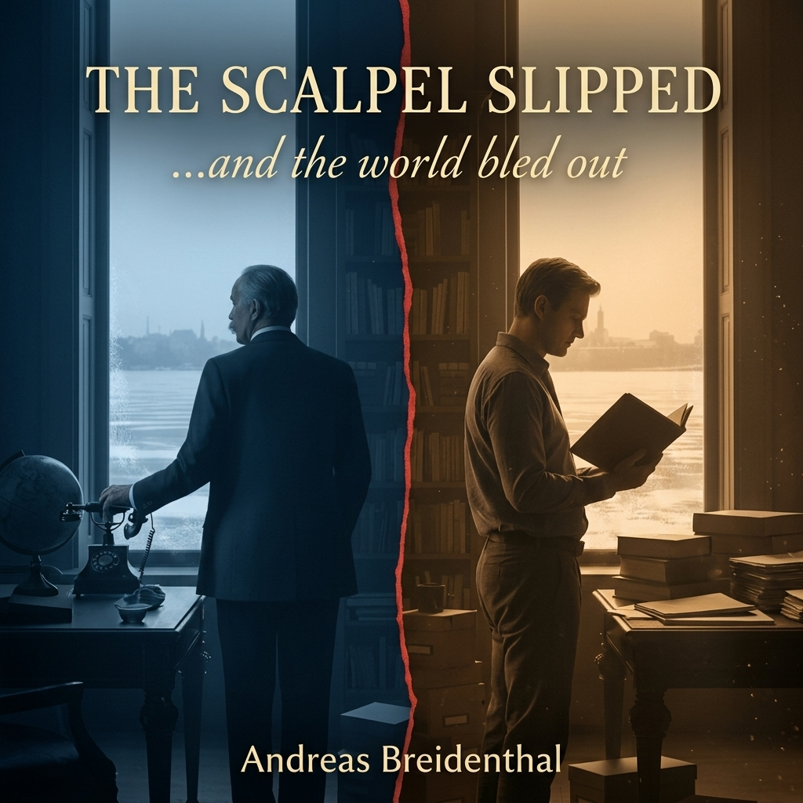

The telegram arrived at 1:47 PM.
A clerk burst into the budget meeting, his face drained of color. He held a slip of paper like it might burn him.
"From Vienna," he managed. "Urgent."
Sazonov took it without expression, read it once, then looked up at the assembled ministers. "Gentlemen, we'll need to adjourn."
They filed out in uncertain silence. Only when the door closed did Sazonov allow himself to read it again:
He stood and walked to the window. Below, the Neva moved dark and slow through the afternoon heat. Carriages rattled over cobblestones. A vendor called out, selling kvass. The ordinary machinery of a Sunday afternoon, continuing as though the world hadn't just pivoted.
His hands were steady. His breathing measured. His mind already moving through contingencies he'd prepared—mobilization protocols, diplomatic channels, coordination mechanisms.
All of it ready.
All of it waiting.
A knock. The clerk again, even paler.
"Foreign Minister. A second telegram."
Sazonov read it twice.
Dead. Not wounded. Dead.
Something moved through him—not quite relief, not quite satisfaction. Something colder. The feeling a surgeon might have when the incision proves exactly where expected, when the anatomy matches the textbook diagram.
Two years of careful positioning. Two years of frameworks and contingencies. Two years of mapping Europe's fracture lines.
And now the keystone was gone.
He should call Tsarskoye Selo immediately. Nicholas would need to hear this personally, not through channels. The Tsar would be shocked. Horrified. He would cross himself and murmur prayers.
Sazonov reached for the telephone, then stopped.
First, a different matter.
He unlocked the bottom drawer of his desk—the one he opened alone, after hours, when clerks had gone home. Inside were files marked with classifications that routed only to him: Belgrade Station reports, capability assessments, threat matrices.
Intelligence that had been arriving since April.
Intelligence that had grown increasingly specific through May and June.
Intelligence that had never been forwarded to Vienna.
Sazonov didn't remove the files. He simply looked at them, confirming they were still there, still secure. Then he locked the drawer again.
When historians examined this day—and they would—they would find a Foreign Ministry caught off guard. They would find a minister reacting to unexpected tragedy, scrambling to manage crisis no one had foreseen.
They would not find this drawer.
They would not find the intelligence reports marked "recommend Vienna advisory."
They would not find the choices made in April, May, June—the careful decisions, the systematic silence.
Now he lifted the telephone receiver. The operator connected him through three exchanges to Tsarskoye Selo.
"His Majesty must be informed immediately," Sazonov said. "The Archduke is dead."
While he waited for Nicholas to come to the line, Sazonov looked out at St. Petersburg, at the city moving through its Sunday afternoon, unaware that the world it knew was already gone.
When had positioning crossed into causing?
To understand that, one must return to a winter night two years earlier, when the architecture of catastrophe was still only possibility, and the man who would help build it believed he could control what he was creating.
The Foreign Ministry after midnight was no longer a place of policy. It was a place of clarity.
Sergei Sazonov preferred it this way. Decisions made in daylight were compromised by performance—the need to explain, to justify, to account for witnesses. Decisions made alone, in the green-shaded lamplight of an empty office, answered only to logic.
Three folders lay on his desk, aligned with deliberate care. Not labeled by treaty or nation, but by capital: Berlin. Vienna. St. Petersburg. Inside were not plans but profiles—habits, anxieties, remembered humiliations, notes from conversations never committed to official record.
Sazonov was fifty-one years old, educated at the Alexander Lyceum where Russia's administrative elite learned that the world was an unstable instrument requiring expert management. He had spent his career watching empires from the inside: London's arithmetic of power, Rome's patience, Vienna's exhaustion. He understood that Europe was not a collection of states but a failing structure, and that the man who mapped its weaknesses might position his nation for the moment of collapse.
If collapse came.
When collapse came.
The distinction mattered.
He opened the Berlin folder first.
Wilhelm II did not require persuasion. He required validation. The Kaiser's vanity was kinetic—impatient, theatrical, hungry for recognition. Present him with the prospect of German influence over Austria-Hungary's industrial regions, frame it as destiny rather than aggression, and Wilhelm would supply momentum willingly. He would mistake ambition for vision.
Sazonov made a note: Does not seek governance through force. Would accept it if achieved diplomatically.
The Vienna folder was more complex.
Franz Josef was dying slowly, his empire dying with him. Sixty-three years on the throne had taught him that holding contradictions together was nobler than solving them. But exhaustion, once acknowledged, could feel like permission. A sharp enough crisis in the Balkans would collapse choice into necessity. Faced with internal dissolution, the old Emperor might accept external "management" as the least terrible option.
Sazonov wrote one word in the margin: Fatigue.
The St. Petersburg folder he saved for last.
Nicholas II was volatile precisely because he believed himself moral. Duty weighed on him—to dynasty, to faith, to the Slavs who looked east for protection. Frame action as responsibility rather than ambition, and Nicholas would commit. Make inaction feel like betrayal, and he would authorize anything.
Sazonov recognized this not as manipulation but as translation. The Tsar did not need to be driven. He needed to see that what he already wanted to do was also what he ought to do.
The elegance of the framework taking shape lay in its economy. Nothing required invention. Vanity would supply force. Fatigue would eliminate alternatives. Duty would ensure commitment.
Sazonov drew three interlocking arcs on a blank page. Incomplete alone. Decisive when engaged together.
War appeared nowhere in the diagram.
War was crude, unpredictable. What he was designing was a framework for recognizing how pressure—if it emerged naturally—would flow along predictable paths. How fracture, if it occurred, could be guided rather than feared.
He was not creating instability.
He was mapping where it already existed.
An hour after midnight, Sazonov crossed to the window. St. Petersburg looked immutable from above—a useful illusion. He knew better. Structures endured only as long as their load-bearing points held.
When he returned to the desk, he opened a fresh page and wrote a heading:
Contingency Memorandum: Habsburg Fracture Scenarios
He did not sign it. Not yet. This was not a document meant to be found—or, if found, meant to be understood as anything more than prudent planning.
Three hours later, when he finally extinguished the lamp, he had created something that existed in the space between observation and action. A framework that could claim to be purely analytical until the moment it was used.
And in that ambiguity lay both its power and its danger.
But Sazonov, walking through the empty corridors toward the waiting carriage, felt only satisfaction.
He had not caused anything.
He had simply prepared for what history might provide.
These were sufficient reasons.
The dossier on Franz Ferdinand was thinner than the others, yet it carried the weight of a linchpin.
Sazonov examined the Archduke's photograph on a grey January afternoon, snow falling past his office windows. To most of Europe, Franz Ferdinand was merely Vienna's unpopular heir—abrasive, married to a woman the court barely tolerated. To Nicholas, he represented something more hopeful: a reformer who might stabilize the empire through modernization.
Sazonov saw what neither Nicholas nor the Archduke's supporters grasped.
Franz Ferdinand was not a stabilizer. He was a bottleneck—the single point through which all reform must pass, and therefore the single point whose removal would collapse reform's possibility entirely.
The Archduke's vision of Trialism—elevating Slavs to equal partnership with Germans and Hungarians—offered something Russia could never match: a liberal, Catholic alternative to Orthodox protection. It promised subject peoples autonomy within empire rather than independence through Russian patronage.
If Franz Ferdinand succeeded, the Balkans would stabilize. Slavic populations would find their future within a reformed Habsburg structure.
Russia's role as liberator would become obsolete.
Sazonov set the dossier aside and studied the map pinned to his wall. The contingency memorandum he'd drafted in 1912 depended on Habsburg fragility. Every scenario assumed the empire would fracture under pressure.
But fracture required weakness at critical points.
So long as Franz Ferdinand lived and worked toward reform, that weakness didn't exist.
Sazonov pressed his pen against the dossier's margin, then set it down without marking anything.
He was not planning assassination. The thought was both absurd and unnecessary. The Balkans were volatile. Serbian nationalism was real, documented, driven by historical grievance. Radical groups operated beyond governmental control.
Franz Ferdinand was their most visible target.
It was not a question of whether someone might attempt something. It was a question of when, and whether Vienna's security would be adequate.
Sazonov thought of a case he'd once read: a doctor who knew a patient was taking poison but chose not to intervene because the patient was an enemy of the state. The doctor hadn't supplied the poison. He'd only declined to mention the antidote.
What was that doctor guilty of?
He stood and crossed to the window. The Neva lay frozen, white as blank paper.
What if Russia knew about threats to Franz Ferdinand and chose not to warn Vienna?
That would not be causing an assassination. That would be recognizing that history had momentum, and sometimes the statesman's duty was ensuring his nation was prepared when momentum produced results.
Sazonov returned to his desk and opened his notebook to a fresh page. His pen moved across the paper, then stopped. He read what he'd written:
Query: If intelligence indicates threat to Habsburg heir, what is Russia's obligation?
He stared at the question for a long moment.
Then he closed the notebook without answering it.
The world was not yet broken. Franz Ferdinand still lived, still pursued his reforms, still represented the keystone of Habsburg stability.
But Sazonov had identified the point where architecture could fail. And unlike other diplomats, who might rush to reinforce that point, he found himself considering a different question:
What would happen if no warning came?
He left the question unanswered, hanging in the winter silence.
The reports began in March—manila folders, cipher notations, the routine bureaucratic cadence of intelligence work.
Station Belgrade, 8th March 1914
Classification: Routine
Black Hand organization continues recruitment. Rhetoric increasingly focused on symbolic targets. Recent intercepts suggest heightened interest in Habsburg ceremonial calendar. Capability: moderate to high. Recommend continued monitoring.
Sazonov read it twice, filed it under "Balkan Internal Affairs."
He did not forward it to Vienna.
Station Belgrade, 21st March 1914
Classification: Routine
Unconfirmed reports of small arms transfers within nationalist networks. Quantities small: pistols, grenades. Assessment: consistent with typical radical cell provisioning. No indication of state sponsorship.
Sazonov underlined "No indication of state sponsorship."
He did not share it with the Habsburg embassy.
Station Belgrade, 2nd April 1914
Classification: Elevated
Intelligence suggests Black Hand leadership discussing potential operations against high-value Habsburg figures. Specific targets not identified. Operational timeline: indeterminate. Capability: confirmed.
Recommend diplomatic advisory if Habsburg officials plan high-profile Balkan appearances.
Sazonov read this one more slowly. The recommendation was underlined by the station chief.
Standard protocol dictated he forward this through back-channels. Not a formal warning—that would suggest Russian intelligence penetration into Serbian affairs—but a subtle heads-up. The sort of thing that happened between rival powers to prevent embarrassments.
He picked up his pen.
Set it down again.
If he warned Vienna, Habsburg security would tighten. Franz Ferdinand's protection would improve. The Archduke would continue his work—federalizing the empire, offering Slavic populations an alternative to Russian protection.
If he did not warn Vienna, Habsburg security would remain at current levels—adequate for routine situations, insufficient for determined conspirators.
Sazonov walked to his window. St. Petersburg moved below, indifferent to calculations taking place in the Foreign Ministry.
He thought about responsibility.
Surely responsibility meant causing an event—taking action that brought it into being. But he was not taking action. He was declining to prevent action others might take.
Was that the same thing?
A doctor who withheld treatment was not the same as a doctor who poisoned a patient. One was neglect. The other was murder.
But what if the doctor knew the patient would die without treatment, knew he had the cure, and chose not to administer it because the patient's death served his interests?
Sazonov turned from the window.
He returned to his desk and drafted a response:
To: Chief of Station, Belgrade
From: Foreign Ministry, St. Petersburg
Re: Target Assessment Update, 2nd April 1914
Your report noted. Continue monitoring per standard protocols. Regarding recommendation for diplomatic advisory: Habsburg security arrangements remain internal matter for Vienna. Russian interest in Balkan stability best served by maintaining diplomatic distance from Austrian internal security concerns.
Update only if intelligence indicates state-level threat requiring formal diplomatic engagement.
He read it over. It said everything and nothing. It acknowledged intelligence without acting on it. It established a policy of non-interference that sounded principled rather than strategic.
Most importantly, it created a paper trail showing the Foreign Ministry was aware of general threats but had made a considered decision that Habsburg security was Vienna's concern, not St. Petersburg's.
If anyone ever reviewed these files, they would find a cautious diplomat maintaining appropriate boundaries.
Not a conspirator enabling assassination.
Sazonov signed it and watched the clerk encode it for cipher transmission.
Then he returned to the drawer and pulled out all three reports. He read them in sequence, seeing the pattern: capability, weaponry, targeting.
The framework was building itself. Not Russian framework—Serbian framework. Built by men Russia could observe but not control.
Or so the official position would be.
He locked the reports away and sat in his office, aware that he'd crossed a threshold.
He was no longer merely observing Europe's fragility. He was ensuring that fragility would not be reinforced before it fractured.
But this was still preparation, not causation. Strategy, not crime.
The logic was sound. Habsburg security was Vienna's responsibility. Russian intervention would create diplomatic complications. These were sufficient reasons.
Two months passed. Spring turned to early summer. Reports continued from Belgrade Station—some routine, some concerning, all filed according to the protocol Sazonov had established.
Vienna remained unwarned.
Then, on June 10th, the final report arrived.
Station Belgrade, 10th June 1914
Classification: URGENT
Black Hand operational preparation confirmed. Intercepts reference major action during Habsburg ceremonial calendar. Multiple references to 'Kosovo day' and 'removing the obstacle.' Target assessment: senior Habsburg officials, likely Archduke during announced Sarajevo visit.
Date: 28th June (Vidovdan). Method: Multiple operatives positioned along probable motorcade route. Weapons: small arms, grenades.
Capability: HIGH. Success probability: MODERATE TO HIGH given symbolic date and operational environment.
CRITICAL: Operational timeline suggests attack will proceed regardless of external factors. Group commitment appears absolute.
RECOMMENDATION: Immediate diplomatic advisory to Habsburg authorities. Security enhancement critical. Russian interests served by preventing incident that could destabilize region.
Sazonov read it three times.
The final sentence struck him: Russian interests served by preventing incident.
The Belgrade station chief genuinely believed that. He'd assessed based on conventional wisdom: regional stability served Russian interests, therefore preventing assassination served Russian interests.
He didn't understand that Sazonov had been working from different assumptions entirely.
Sazonov pulled out secure stationery and began to compose his response. Then stopped. Set down the pen.
He stood and crossed to the telephone.
His hand rested on the receiver. The porcelain was cool against his palm.
He could lift it now. Ask the operator for the Habsburg embassy. Speak to the military attaché. Frame it carefully: "We've received troubling intelligence. Nothing specific, but the climate in the Balkans is particularly volatile. The date of the Archduke's visit—June 28th—carries symbolic weight. Perhaps additional security precautions might be warranted."
They would listen. Vienna's intelligence wasn't as comprehensive as Russia's. They would take it seriously. They would tighten security. Change the route. Add guards. Perhaps cancel the visit entirely.
Franz Ferdinand would live.
His hand tightened on the receiver.
Franz Ferdinand would live, and his reforms would proceed, and the Slavic populations would find their future within a federalized Habsburg structure, and Russia's protective role would diminish into historical memory.
His hand remained on the receiver but did not lift it.
If he made this call, everything he'd positioned for would evaporate. The frameworks. The contingencies. The careful preparation for the moment when Habsburg weakness created Russian opportunity.
One phone call would prevent all of it.
He stood there for a long moment, hand on the receiver, feeling its coolness against his palm.
Then he released it and stepped back.
He returned to his desk and picked up the pen.
To: Chief of Station, Belgrade
From: Foreign Ministry, St. Petersburg
Classification: EYES ONLY
Your assessment noted. However, recommendation for Habsburg advisory declined:
Continue monitoring. Report results. Do not initiate contact with Serbian or Habsburg authorities.
All intelligence regarding this matter to be routed exclusively through secure channels. Standard distribution suspended.
He sealed it for cipher transmission—the kind that left no copies, no distribution records.
He had received specific intelligence about a specific threat to a specific person on a specific date.
And he had explicitly ordered his intelligence service not to warn the targets.
More than that: he had ordered all intelligence restricted to secure channels—meaning there would be no broader Russian government awareness, no chance some well-meaning minister might warn Vienna independently.
Russian silence would be complete.
Sazonov opened his private notebook. He wrote carefully:
Personal Note, 10th June 1914
Received intelligence regarding threat to Habsburg heir. Assessment: credible, imminent, high probability. Recommendation from station: warn Vienna.
Decision: maintain non-interference posture. Habsburg security is Vienna's responsibility. Russian intervention would create complications.
These are sufficient reasons.
They must be.
He read it once, then locked it away.
The undetectable crime is the one mistaken for misfortune.
In eighteen days, he would discover whether his framework would activate as designed.
On June 15th, a routine bulletin arrived from the Habsburg Foreign Ministry: the summer schedule of imperial visits.
Among the entries:
28th-29th June: Archduke Franz Ferdinand and Duchess Sophie to inspect military maneuvers in Bosnia-Herzegovina. Ceremonial visit to Sarajevo on 28th June. Open cars along Appel Quay.
Sazonov stared at it.
June 28th. Vidovdan. St. Vitus Day—the anniversary of the 1389 Battle of Kosovo, the most sacred and traumatic date in Serbian national consciousness.
And the Habsburg heir would parade through Sarajevo in open cars on that day.
It was inconceivable that Habsburg security hadn't recognized the risk.
Unless they simply didn't know.
Because no intelligence service had warned them.
Sazonov drafted a reply:
The Foreign Ministry acknowledges notification of imperial visits. We wish the Archduke safe travels and a productive tour.
He signed it and sent it through routine channels.
Then he sat in his office as June advanced toward the 28th, and the countdown began.
Eighteen days had become thirteen.
Thirteen became seven.
And Sazonov watched the calendar pages turn, aware that he had crossed from observation into something else—not quite causation, but no longer innocent positioning either.
The rationalization held.
For now.
The Foreign Ministry had gone quiet in the way buildings do when history is about to change hands.
Almost four weeks had passed since Sarajevo. Almost four weeks of shocked condolences, careful positioning, waiting for Vienna's response. Now it had arrived.
Sazonov stood at the threshold of his office as a clerk approached, carrying a sealed dispatch on a silver tray.
"From Vienna," the man said. "Arrived this morning."
Sazonov dismissed him and broke the seal.
The Austro-Hungarian ultimatum to Serbia lay before him—not a diplomatic instrument, but a legal trap. Twenty-four demands, numbered with Prussian precision. Each clause fitted too neatly into the next. Each concession required another until compliance became indistinguishable from capitulation.
Forty-eight hours to respond.
Sazonov set the pages down carefully.
He had anticipated severity. Even brutality. What he had not anticipated was engineering. This document had been constructed with a purpose that transcended Austrian revenge. It was designed not to be negotiated, but to be refused—and to justify whatever came after.
He picked it up again, reading for cadence rather than content. Something in the rhythm troubled him. The language was sharp where it should have been ceremonial. Vienna, when it threatened, tended to threaten slowly, with excess justification.
This was different. This was steel dressed as law.
A thought surfaced, unwelcome: This is too clean.
For weeks, he'd worked to create pressure without rupture. A tightening that could still be guided. What lay on his desk did not tighten.
It snapped.
He pressed his thumb against the margin, leaving a faint crescent in the paper.
Somewhere, a line had been crossed—but not by Vienna alone. This felt instructed, shaped to perform a function rather than express a grievance.
And Sazonov, staring at the document, understood: he had not been the only one positioning for Habsburg collapse.
Someone else had looked at the same vacuum and filled it with something cruder than diplomatic partition.
He lifted the telephone receiver. "Tsarskoye Selo."
The line passed through deferential pauses before an adjutant spoke. "His Majesty will convene the Council at dawn."
Dawn. Sazonov replaced the receiver.
He began drafting instructions—not for policy, but for containment. Which files should be relocated. Which correspondence misfiled. Which memoranda should vanish into bureaucratic chaos.
History would come soon enough. When it did, it would find a ministry caught off guard, reacting rather than directing. It would find a Foreign Minister who had observed structural fragilities but had not caused them to collapse.
It would not find the drawer he kept locked.
The one containing intelligence reports from Belgrade Station marked "Black Hand activities—recommend Vienna advisory."
Reports he had received in April, May, June.
Reports he had never forwarded.
He should feel something—regret, guilt, horror at what he'd enabled. Instead, he felt only the cold clarity of recognition: the framework he'd built had been seized by others and weaponized beyond his design.
At Tsarskoye Selo he would argue for restraint. He would present himself as the voice of reason in an unreasonable moment.
He already knew how the argument would end.
At the door, he glanced once more at the ultimatum. Forty-eight hours.
His careful positioning had become someone else's weapon. What he'd intended to hold had been taken from his hands and used for purposes he had never imagined.
The Ministry hummed with urgent quiet, unaware that the irrevocable had already begun.
And Sazonov walked among the clerks, feeling the weight of a truth he could never speak: that the instrument he'd designed to guide had instead become the mechanism that ensured no one could stop what was coming.
The week following the ultimatum was not a timeline of events but a slow-motion catastrophe, each day collapsing into the next like dominoes falling in a pattern Sazonov could see but not stop.
On the morning of July 24th, he stood in his office reading Serbia's response to Austria's demands. The document was a masterpiece of calculated defiance—accepting enough to appear reasonable, rejecting just enough to preserve sovereignty. Exactly what Vienna had designed the ultimatum to produce.
Sazonov read it three times, recognizing immediately what would happen next. This wasn't diplomacy. This was theater, performed for an audience that had already decided on war.
He tried anyway.
By afternoon he'd drafted three separate proposals for mediation—direct negotiations between Vienna and Belgrade, a conference of ambassadors in London, Russian guarantee of Serbian compliance. He sent them through every channel he had: the German ambassador, the British Foreign Secretary, even a personal appeal to the French President.
Each attempt vanished into silence or returned with polite deflection.
On July 25th, Austria broke diplomatic relations with Serbia. Sazonov learned of it from a telegram that arrived during breakfast. He set down his tea carefully, the cup chattering slightly against the saucer, and called an emergency meeting of the Council of Ministers.
"Vienna is moving toward war," he told them. "We must signal that Russia will not stand aside."
"But what can we do?" The Finance Minister's voice carried the exhaustion they all felt. "Austria is within its rights to seek satisfaction for an assassination."
"Not this kind of satisfaction." Sazonov spread the ultimatum across the table. "This isn't justice—it's erasure. If we permit this, we abandon every Slav under foreign rule."
They authorized what he requested: a "Period Preparatory to War." Not mobilization—carefully not mobilization—but the administrative measures that preceded it. A signal meant to make Vienna pause.
Vienna did not pause.
On July 26th, Sazonov met personally with Count Pourtalès, the German ambassador. They'd known each other for years, had shared dinners, had worked together on smaller crises. Now they sat across from each other like strangers.
"Germany must restrain Austria," Sazonov said. "This is spiraling beyond anyone's control."
Pourtalès looked older than he had a month ago. "My instructions are clear. Germany stands with Austria. The Chancellor believes..."
He trailed off.
"What does the Chancellor believe?" Sazonov asked quietly.
"That commitments matter. That alliances must be honored." Pourtalès met his eyes. "Sergei Dmitrievich, I fear we have all lost control of this."
The admission hung between them—the first crack in diplomatic formality, the moment when two professionals acknowledged they were passengers now, not drivers.
On July 27th, Sazonov spent fourteen hours drafting alternatives, calling ambassadors, sending telegrams that grew increasingly desperate in their proposals. Anything to create space between Austria's declaration and actual military action. Anything to slow the machinery.
Every proposal died in committees or chancelleries, smothered by procedure or simply ignored.
Late that evening, he stood at his office window watching St. Petersburg's lights. Somewhere out there, people were having dinner, attending theater, living ordinary lives while he stood here watching the architecture of their world collapse.
His hand moved to the locked drawer—habit now, checking that it was still secure. The intelligence reports inside seemed to pulse like something radioactive. Had he enabled this? Or would it have happened regardless?
The question felt increasingly academic.
On the morning of July 28th—exactly one month after Sarajevo—Austria declared war on Serbia. By evening, Austrian artillery was shelling Belgrade. Sazonov could hear the crowds gathering outside the Winter Palace before the official notice reached him. The sound rose through his windows: thousands of voices demanding that Russia act, that Nicholas protect the Slavs, that honor be satisfied.
The Tsar appeared on the balcony. Sazonov watched from a window in the Ministry, saw the small figure in white uniform, heard the roar when Nicholas promised Russia would not abandon its brothers.
That night, Sazonov drafted the order for partial mobilization—southern military districts only, explicitly aimed at Austria, carefully not threatening Germany. He marked it "DETERRENCE ONLY" in his own hand before sending it to Nicholas for signature.
The next morning, July 29th, he presented it at Tsarskoye Selo.
Nicholas signed it at noon.
By evening, it was clear the order was unworkable.
General Yanushkevich arrived at the palace with maps, railway schedules, mobilization tables spread across every available surface. Sazonov stood in the corner of the conference room, watching the generals explain to Nicholas what he already knew: there was no such thing as partial mobilization.
"The railway system is designed for total deployment," Yanushkevich said, his finger tracing lines on the map. "Southern districts depend on northern supply depots. Artillery units in one district require ammunition trains from another. Communication networks are integrated. If we mobilize partially, we create chaos—units arriving without supplies, supplies arriving without units, commands lost in contradictory orders."
"Partial mobilization is partial defenselessness," another general added. "If Germany moves while we're still sorting ourselves out, we lose the war before it begins."
Nicholas's face was very pale. "You're saying if we mobilize at all, we must mobilize completely?"
"We're saying the plans exist in only one form, Your Majesty. Partial measures aren't prudent—they're suicidal."
Sazonov wanted to object. To argue that general mobilization would be seen by Germany as an act of war, that it would eliminate any remaining diplomatic alternatives, that once the railway schedules locked into place there would be no reversing them.
But he said nothing.
Because he understood what the generals understood: the machinery of war, once engaged, operated according to its own imperatives. Mobilization schedules were not suggestions—they were precisely choreographed movements of millions of men, designed to unfold at a specific pace in a specific sequence. There was no pause button. No half-measures. No graceful exits.
You started the engine or you didn't. Once started, it ran until it crashed.
Nicholas stood at the window for a long time, looking out at the manicured gardens of Tsarskoye Selo. Finally, without turning around, he said: "Prepare the order for general mobilization."
"Your Majesty," Sazonov found his voice. "Perhaps we could delay—"
"To what end?" Nicholas turned. His eyes were hollow. "You've read the reports. You know what's coming. If we're going to act, we must act decisively. God forgive us."
The order went out at 5:00 PM on July 30th.
Sazonov was in the room when Nicholas signed it. He watched the Tsar's hand tremble as the pen moved across paper, watched the imperial seal pressed into wax, watched the document handed to a courier who walked quickly from the room as though carrying something that might explode.
"We meant only to protect the innocent," Nicholas said quietly, more to himself than to anyone present.
Sazonov wanted to say something—to offer reassurance, to suggest this might still be deterrence rather than commitment, to pretend diplomatic solutions remained available.
But the words died in his throat because they would have been lies.
He returned to his office as night fell over St. Petersburg. The Ministry was chaos now—clerks running between offices, telegraph operators overwhelmed, junior ministers shouting contradictory orders. The machinery of war revealing itself, previously hidden behind peacetime routine.
The telegrams arrived in waves:
From Berlin, 11:00 PM July 30th:
Germany demands Russian demobilization within twelve hours.
Sazonov read it and knew there would be no demobilization. The trains were already moving. Millions of men already reporting to depots. The machinery engaged, impossible to reverse without catastrophic disorder.
From St. Petersburg to Berlin, 2:00 AM July 31st:
Russia's mobilization is defensive in nature, not directed against Germany. We seek only to protect legitimate interests.
From Berlin, 5:00 PM July 31st:
Germany declares state of threatening danger of war. Mobilization ordered.
From Paris, 6:00 PM July 31st:
France begins mobilization in support of Russian alliance obligations.
From Berlin, 7:00 PM August 1st:
Germany declares war on Russia.
From Berlin, 9:00 AM August 2nd:
Germany demands French neutrality in Russo-German conflict.
From Paris, 3:00 PM August 2nd:
France refuses German demand for neutrality. Mobilization continues.
From Berlin, 7:00 PM August 3rd:
Germany declares war on France.
From Berlin to Brussels, 10:00 AM August 2nd:
Germany requests permission for troop passage through Belgium to French frontier.
From Brussels, 2:00 PM August 2nd:
Belgium refuses. Belgian neutrality guaranteed by treaty. Will resist passage with all available forces.
From Berlin, 8:00 PM August 3rd:
German forces cross Belgian frontier.
From London, 11:00 PM August 4th:
Britain issues ultimatum: Germany must respect Belgian neutrality. Deadline midnight.
From Berlin, 11:59 PM August 4th:
No response.
From London, 12:05 AM August 5th:
Great Britain declares war on Germany.
Seven declarations of war in five days.
From one assassination to continental conflagration in five weeks.
Sazonov sat alone in his office on the morning of August 5th, staring at the telegrams spread across his desk like evidence at a crime scene.
He had believed that understanding the machinery meant he could guide it. That by mapping Europe's fractures, he could control how they broke. That by positioning carefully, he could manage the crisis when it came.
What he'd failed to understand was that the machinery—once engaged—operated according to its own imperatives. Railway schedules. Alliance commitments. Military plans drawn up by generals who'd never believed diplomacy would solve anything. Momentum that accumulated over decades, compressed now into hours.
And underneath all of it, invisible but present: the intelligence reports he had received and not shared, the warnings he had declined to forward, the telephone receiver he had not lifted.
Had he caused this? Or merely failed to prevent it?
The distinction he'd relied on—between action and inaction, between causing and allowing—felt increasingly meaningless as church bells rang across St. Petersburg.
Not in celebration.
In mourning.
Russia was at war. France was at war. Germany was at war. Britain was at war. Austria-Hungary was at war. Serbia was at war.
Millions would die because an Archduke had been shot in Sarajevo.
An Archduke who might have lived if warnings had been shared.
Warnings that existed but were never forwarded.
Sazonov opened the locked drawer one final time. The intelligence reports sat there, silent and damning. He read the top one again:
RECOMMENDATION: Immediate diplomatic advisory to Habsburg authorities. Security enhancement critical.
Below it, his own response:
Recommendation for Habsburg advisory declined. Do not initiate contact with Serbian or Habsburg authorities.
He closed the drawer carefully and locked it.
The perfect crime was not perfect after all. It was merely the beginning of something far worse than crime.
It was the beginning of the end of the world he had known.
Outside his window, St. Petersburg continued its morning routines—changed now, darkened by mobilization, but continuing. Soldiers marching to railway stations. Families saying goodbye on street corners. Women already beginning to wear black.
The cascade was complete.
And Sazonov sat at the center of it, knowing that somewhere in the chain of causation between his locked drawer and the millions who would die in the mud of France and the forests of Poland, there was a line he had crossed.
When had observation become complicity?
The question had no answer he could bear to speak.
Two years into the war, Sazonov received the summons.
The Brusilov Offensive—promised as breakthrough—had collapsed into familiar horror. Hundreds of thousands dead for kilometers of mud that would be lost by autumn. Food riots in Petrograd were routine now. The Duma questioned the Tsar's competence openly. And the Tsarina, increasingly under Rasputin's influence, saw enemies everywhere.
Sazonov had become one.
"The Empress believes your continued service is no longer beneficial," Nicholas said, not meeting his eyes. They stood in the same study where, two years earlier, Sazonov had persuaded the Tsar that Russia must be prepared for crisis. "She feels new leadership might bring fresh perspective."
It was Alexandra's doing—the Tsarina had long distrusted Sazonov's intellect, his secular approach. But Nicholas's willingness to act on her advice spoke volumes about how completely the Tsar had surrendered. The war had broken something in him. He no longer made decisions—he agreed with whoever spoke last.
"I serve at Your Majesty's pleasure," Sazonov said.
"You'll be compensated appropriately. But effective immediately, your duties are concluded."
There was no mention of positioning before the war. No acknowledgment of frameworks built, intelligence withheld, choices that led to this moment.
Nicholas had either forgotten or chosen to forget.
Perhaps he had never fully understood.
Sazonov bowed and withdrew.
Back in his office—which would no longer be his within days—he sat at the desk where he'd made so many calculations, positioned so carefully for the crisis he'd enabled but not caused.
The irony was complete: dismissed not for what he'd actually done, but for failures that followed, for the war he'd never wanted, for catastrophe that had escaped his framework entirely.
No one suspected the real crime.
No one looked for intelligence reports in drawers.
No one asked whether the Foreign Minister who'd positioned so carefully might have received warnings he chose not to share.
History would record that Sergei Sazonov served competently until the war's strain required new leadership.
It would not record that he had helped create conditions for that war.
Because no one knew to look.
As he cleared his desk, Sazonov faced the drawer only he could open.
He stared at it for a long moment.
Then he removed every document—every intelligence report, every contingency memorandum, every piece of systematic preparation.
The office had a fireplace, rarely used but functional. He lit it now.
He fed the papers in slowly. The intelligence reports from Belgrade Station, curling into ash. The contingency frameworks for Habsburg partition, blackening. His personal notes about choosing not to warn Vienna, disappearing into smoke.
Each page he burned felt like erasure of more than paper. These were the only records that his calculations had been real, that his framework had existed. Without them, he was simply a diplomat who'd made reasonable decisions in unreasonable times.
With them, he was something else entirely.
He watched the flames consume two years of systematic preparation. The March report—gone. The April recommendation—gone. The June 10th intelligence with its specific details about Sarajevo—gone.
What remained in the files would be sanitized: routine correspondence, standard intelligence summaries, nothing suggesting Russia had known anything specific or positioned beyond normal prudence.
The record was clean.
The truth was ash.
He stirred the ashes with the poker until they were unrecognizable, then stood watching the embers fade.
Only one document remained—the leather-bound notebook he carried everywhere, with its red pencil marking the page: Sarajevo.
He pulled it from his pocket and opened it. Beyond that marking were his notes from 1912 through 1914. The framework. The positioning. The intelligence reports summarized. The dates he'd chosen not to act.
All of it there, in his own hand.
Sazonov carried the notebook to the fireplace. The embers still glowed faintly. He could drop it in now. Watch it catch. End this completely.
His hand hovered over the opening.
But he couldn't do it.
This was the only proof that he had not been simply buffeted by events. That he had tried—however catastrophically—to shape them. That his mind had worked, his calculations had been real, his framework had existed.
Without this notebook, the truth died completely.
With it, some record survived—even if no one else would ever see it.
He wasn't sure which version of history he wanted.
Or which version of himself.
Sazonov closed the fireplace grate and slipped the notebook into his coat pocket. Then he left the Foreign Ministry for the last time.
On the street, Petrograd continued its wartime routines. Soldiers on leave, faces hollow with what they'd seen. Women in black, mourning husbands, sons, brothers. Queues for bread and coal stretching around corners. The city looked worn, on the edge of something worse than war.
Sazonov hailed a cab and gave his home address.
He had committed what he now understood was a crime—not legally perhaps, but morally. He had known a man would be murdered and declined to prevent it. He had positioned his nation to exploit tragedy before it occurred. He had built frameworks that assumed catastrophe and prepared to benefit from it.
And now all evidence was gone.
Burned.
As though it had never existed.
History would never know.
Sazonov should have felt relief.
Instead, he felt a hollowness that threatened to consume him. Because without evidence, without witnesses, without record, the only person who would ever carry the weight of his choices was himself.
And that weight might be more than he could bear.
The cab rattled through streets that looked increasingly unfamiliar, as though the city itself was becoming foreign to him. Or perhaps he was becoming foreign to it—a man carrying secrets from a world that no longer existed, unable to speak them, unable to forget them.
As they passed the Winter Palace, he saw more crowds gathering. Angry faces. Raised fists. The same energy that had demanded action in July 1914 now demanded something else—change, revolution, an end to the war that had consumed everything.
The war he had helped begin.
The cab turned onto his street and Sazonov looked away from the crowds, away from the city, focusing on nothing.
In two years, he would have to flee this place entirely.
But the weight he carried would follow him wherever he went.
Six months after his dismissal, an offer arrived: Ambassador to the Court of St. James's. The most prestigious posting in Russian diplomacy.
Sazonov understood immediately.
This was not elevation. This was removal—away from Russia, away from records, away from anyone who might ask uncomfortable questions. It placed him in London, surrounded by British intelligence, embedded where every conversation would be observed.
It was brilliant. Cruel, but brilliant.
Before he could depart, the February Revolution dissolved everything.
In days—February 23rd to March 3rd—the Romanov dynasty simply evaporated. Nicholas abdicated. The Provisional Government took power. And suddenly all old certainties became irrelevant.
The Revolution released something more dangerous than mobs: archives.
As old ministries were seized by revolutionary committees, as files were opened for evidence of "tsarist crimes," Sazonov realized the sanitization he'd performed might not be sufficient.
He'd destroyed the most incriminating documents. But there were copies, summaries, references in other files. The intelligence system was distributed, redundant. A report sent to St. Petersburg had been filed in Belgrade. A cipher message decoded in the Foreign Ministry had been logged by the telegraph office. A memorandum distributed to three ministers had three copies in three different archives.
The web was larger than any single burning could eliminate.
And the Bolsheviks—growing stronger daily—were specifically looking for evidence of "imperialist conspiracy" to justify the war.
If they found evidence that the tsarist government had known about threats to Franz Ferdinand and chosen not to warn Vienna—proof that intelligence suggesting assassination had been filed rather than shared—it would be propaganda gold.
Proof the war was not inevitable accident but deliberate imperial calculation.
Sazonov worked frantically through back-channels to ensure certain files stayed classified, certain archives remained "temporarily unavailable," certain station chiefs who knew too much about Belgrade 1914 were reassigned or quietly retired.
He met with nervous archivists in empty offices, speaking in low voices about "sensitive materials" and "diplomatic complications" and "information that could damage ongoing negotiations."
He offered bribes. He called in favors. He used every connection he'd built over decades to ensure that specific files remained lost in bureaucratic limbo.
But it was like trying to hold back a flood with his hands.
By May, the situation was untenable.
The Provisional Government, facing challenges from all sides, canceled the London appointment. A controversial diplomat abroad might become a liability. Too many questions were being asked about the old regime. Too many investigations beginning.
Sazonov, no longer protected by position or the prospect of prestigious exile, realized he was in danger.
If the Bolsheviks took power—and increasingly it was clear they would—he would be a target. A symbol of the old regime, of diplomatic failures leading to catastrophic war, of the "imperialist conspiracies" they were certain must exist.
If they investigated closely, they might find evidence.
Even if they didn't find it, they might manufacture it.
In June 1917, Sazonov made the decision to flee.
The journey south was chaos. Railways were unreliable, controlled by competing factions that changed allegiance daily. Soldiers deserting the front. Peasants seizing estates. The fabric of order unraveling as he watched.
Sazonov traveled under a false name, carrying only what fit in two bags. He left behind decades of accumulated papers, books, furniture, the material residue of a diplomatic career. His apartment would be seized, inventoried, distributed among the revolutionary masses who saw such places as symbols of aristocratic excess.
In his pocket, wrapped in oilcloth: the leather-bound notebook with its red pencil marking: Sarajevo.
He couldn't explain why he'd kept it. It was dangerous, potentially fatal if discovered by the wrong people. If stopped at a checkpoint, if searched by revolutionary guards, if the notebook was opened and someone who read Russian examined it closely...
But he kept it nonetheless.
A record of what he'd done, even if no one else would ever see it.
The journey took three weeks. Through Tula, Orel, Kursk, each city more chaotic than the last. Past burned estates and abandoned villages. Through checkpoints where nervous boys with rifles decided who could pass and who couldn't, their authority derived from nothing more than possession of weapons and willingness to use them.
Sazonov watched the country he'd served dissolve into fragments, watched the empire he'd tried to expand instead consume itself, and felt the bitter irony of his failure.
He had positioned Russia to benefit from Habsburg collapse.
Instead, Russia had collapsed first.
The vacuum he'd intended to manage had swallowed Russia itself.
By October, when the Bolsheviks seized power in Petrograd, Sazonov was in southern Russia, in the temporary headquarters of what would become the White government-in-exile.
There, in a commandeered hotel in Ekaterinodar, he was given one last appointment: Foreign Minister of the White Russian government.
It was a title without portfolio, a position without power. The White government controlled no embassies, negotiated no treaties, represented no one beyond shrinking zones where White armies still held ground.
But it gave him purpose: to convince Western Allies that White Russia deserved support, that intervention would succeed, that restoration was possible.
Even though he knew it wasn't.
Even though every report from the front showed White forces losing ground, losing men, losing hope.
Even though the world had moved on and the old Russia was as dead as the Archduke he'd declined to save.
In early 1919, he traveled to Paris for the peace conference, carrying credentials from a government that barely existed, representing a cause already lost.
The Allied leaders at the peace conference were polite.
They listened to Sazonov's presentations about the White cause, the need to prevent Bolshevik consolidation, the moral obligation to support Russian freedom. They nodded at appropriate moments. They asked thoughtful questions about logistics and leadership and popular support.
They made sympathetic noises.
Then they did nothing.
Sazonov watched it happen in real time—the enthusiasm cooling, the commitments softening, the intervention forces that had been sent to Russia in 1918 being quietly withdrawn.
The war was over. Their populations were exhausted. No one wanted another massive campaign, especially not in the vastness of Russia against an enemy that seemed to command genuine popular support among war-weary peasants and workers.
He sat in meetings at the Quai d'Orsay and watched the peace conference reshape Europe without Russian participation. Watched borders drawn, territories assigned, new nations created—Poland, Czechoslovakia, Yugoslavia—all carved from the empires that had collapsed.
Including Russia.
The irony was not lost on him. He had positioned Russia to guide the post-Habsburg order. Had enabled crisis believing Russia would benefit from carefully managed fracture.
Instead, Russia had been destroyed by the war he'd helped enable, and was now excluded entirely from shaping what came after.
The conference that should have been Russia's moment of triumph became a funeral for the world Sazonov had known.
By 1920, the White cause was finished. The Bolsheviks had won. And Sazonov, along with hundreds of thousands of other Russian émigrés, faced permanent exile.
He settled in the south of France, among the community that gathered in Nice, Monaco, and the coastal towns where remnants of the old world washed up like driftwood.
There, in rented rooms and modest apartments, former generals and ministers and aristocrats lived on dwindling resources, speaking Russian to each other, reading Russian newspapers that chronicled a homeland they would never see again, attending Russian Orthodox services in churches that felt like museums for a dead civilization.
Sazonov rented a small apartment on the third floor of a building near the Promenade des Anglais. Two rooms, a tiny kitchen, a balcony overlooking the Mediterranean. The furniture was secondhand but adequate. The rent was manageable on his pension.
It was nothing like the life he'd known.
But it was life.
Among the émigrés, Sazonov became a regular fixture. He attended the dinners where aging men refought battles already lost. He participated in discussions about what went wrong, who was responsible, what could have been done differently.
He listened to theories about how the war had started—German aggression, Austrian rigidity, the alliance system's inflexibility, the mobilization schedules that left no room for diplomacy, the failure of leadership across Europe.
And he never said a word about what he knew.
He never mentioned intelligence reports from Belgrade Station.
He never discussed contingency frameworks for Habsburg partition.
He never revealed private coordination with Germany.
He never explained the careful positioning that had anticipated crisis and prepared to exploit it.
He never spoke about the phone call he didn't make, the warning he didn't send, the choice that might have prevented everything.
Because to reveal any of that would be to reveal his own role. And his role, if known, would not be understood as strategic positioning but as conspiracy, not as prudent preparation but as criminal complicity.
So he stayed silent, watching as history congealed into myth—the myth of the war no one wanted, the crisis that spiraled beyond anyone's control, the tragic accident that killed a generation.
He let them believe it was accident.
Because the truth—that it had been enabled by calculation, that warnings had been withheld, that frameworks had been prepared—was too dangerous to speak.
And more fundamentally: who would believe him?
The documentary evidence was gone, burned in a Petrograd fireplace. The witnesses were dead—Nicholas shot in Ekaterinburg, the Belgrade station chiefs scattered or killed, the ministers who might have remembered replaced by revolutionaries who knew nothing of the old regime's secrets. The systems he'd built had collapsed with the empires they were meant to reshape.
All that remained was one old diplomat, living in exile, carrying secrets no one would believe even if he spoke them.
So Sazonov lived in peculiar silence, among men who shared his loss but not his guilt, who mourned the same world but for different reasons.
And every morning, he would wake in his modest apartment, make tea, sit on the balcony watching the Mediterranean sparkle in the morning light, and carry the weight of what he'd done into another day of not speaking it.
In early 1925, a publisher approached Sazonov about writing his memoirs.
They met for lunch at the Negresco—the publisher's choice, not Sazonov's. The man was French, polished, wearing an expensive suit that looked casually elegant in the way only French tailoring could achieve.
"The world wants to understand the war," he explained, gesturing with his wine glass. "Ten years have passed. The anger has cooled. Now people want comprehension—how did it happen? Who were the men who made the decisions? You were there, Monsieur Sazonov. You knew the personalities. You observed the mechanisms. Your insights would be invaluable."
Sazonov studied his plate. The food was excellent—of course it was, this was the Negresco—but he barely tasted it.
"I was not important," he said finally. "A minister, yes, but one among many. I had no special insight."
The publisher smiled. "Modesty is admirable, but unnecessary. You served during the critical years. You negotiated with the Germans, advised the Tsar, positioned Russia's response. Historians will want your perspective."
"Perhaps historians would prefer I remain silent."
"Why would they prefer that?"
Because I helped cause the catastrophe they're trying to understand. Because my account would have to be lies or confession, and neither serves history well. Because the truth I carry would reshape everything, and I cannot speak it.
"Because I have nothing useful to add," Sazonov said instead.
But the publisher was persistent, and the money being offered was substantial, and Sazonov's pension covered rent and food but left little margin for comfort.
And perhaps some part of him wanted to speak—even if only in carefully edited half-truths, even if only in the language of omission rather than revelation.
So he agreed.
For six months, he wrote.
Every morning, he sat at the small desk in his apartment overlooking the Mediterranean, filling page after page with recollections.
He described personalities—Wilhelm's volatility, his need for validation masquerading as decisiveness. Nicholas's moral paralysis, his inability to choose between duty and caution. Franz Josef's exhaustion, carrying an empire that no longer believed in itself.
He revealed the texture of diplomatic life—the ornate rooms where decisions were made, the careful language of memoranda, the weight of telegrams arriving at midnight, the atmosphere of councils where the fate of millions was determined by men who'd never seen a battlefield.
He discussed receiving reports about Balkan instability—carefully vague, nothing specific. Just general patterns of nationalist activity, the kind of intelligence any competent Foreign Ministry would collect.
He acknowledged the need to protect Serbia—carefully framed as moral obligation rather than strategic calculation. Russia as reluctant protector, not opportunistic aggressor.
He admitted to positioning for crisis—but presented as prudent contingency planning, not opportunistic preparation. "Any responsible government maintains scenarios for regional instability. This is not anticipation—it is basic statecraft."
What he did not write:
The memoirs satisfied historians by providing insider perspective while revealing nothing that mattered.
They were Sazonov's final diplomatic achievement: a comprehensive record that documented everything except the truth.
One afternoon in July, writing about the July Crisis of 1914, his pen stopped mid-sentence.
He stared at the page, at the careful words he'd chosen, at the omissions concealed in seemingly candid prose.
The sentence read: "When news of the Sarajevo assassination arrived, it caught the Foreign Ministry—like all of Europe—unprepared for the crisis that would follow."
His pen hovered over the word "unprepared."
For a moment, he considered crossing it out. Writing instead: "When news arrived, I felt the cold clarity of a prediction confirmed. I had known it was coming. I had received specific intelligence. I had chosen not to share it. And in that choice, I had crossed a line I could never uncross."
He could write it all. The real story. The intelligence he'd received and not shared. The frameworks built in anticipation of catastrophe. The phone call he didn't make. The warning he didn't send.
The truth that would reshape how the Great War was understood.
His pen remained poised over the page.
Then he set it down, closed the notebook, and walked to the window.
The Mediterranean sparkled in afternoon light. Below, people strolled the Promenade des Anglais—tourists in summer whites, locals walking dogs, other Russian exiles taking their daily exercise in the sunshine.
No one looked up at the window where an old diplomat sat with the truth that could reshape everything.
No one suspected.
No one asked.
And if he wrote it—if he filled these pages with confession instead of careful evasion—what then?
Would historians believe him? Or would they see only an embittered exile, seeking attention, making wild claims he couldn't prove?
The evidence was gone. Burned in a Petrograd fireplace. Lost in revolutionary chaos. Scattered across archives that no one would connect.
Without evidence, confession was just accusation. Against himself, yes, but also against Nicholas, against the entire tsarist system, against Russia itself.
And what good would it do?
The millions were still dead. The empires were still fallen. The world had moved on.
Truth might satisfy some historical curiosity, but it would not resurrect the dead or restore what had been lost.
Sazonov returned to his desk and picked up the pen.
He crossed out "unprepared" and wrote instead: "deeply concerned."
"When news of the Sarajevo assassination arrived, the Foreign Ministry—like all of Europe—was deeply concerned about the crisis that would follow."
The sentence was true. He had been concerned. Just not surprised.
He continued writing the sanitized version, the one that would satisfy curiosity without risking exposure, the careful lies that felt like truth because they contained no provable falsehoods.
The memoirs were published in 1928, shortly after his death.
Critics praised them for their frankness. Le Figaro wrote: "Sazonov's willingness to acknowledge Russia's diplomatic missteps makes this essential reading for understanding how the Great War began."
The Times of London noted: "A candid assessment from a man who was there. Valuable precisely because Sazonov does not shy from admitting errors in judgment."
If they only knew.
But they didn't know. No one did.
And Sazonov, reading the reviews in his apartment overlooking the Mediterranean, felt the hollowness of a success built on silence.
His memoirs would be cited by historians, quoted in books, referenced in debates about July 1914.
And every citation would reinforce the myth he'd helped create—that the war was accident, that no one had anticipated it, that the crisis spiraled beyond anyone's control.
The perfect crime was writing its own history.
A young Russian émigré named Dmitri Gordeyev came to interview Sazonov for a historical study of the July Crisis.
Sazonov answered the door himself—he had no servants, couldn't afford them—and was struck immediately by the young man's intensity. Early thirties, thin, wearing clothes that had been good once but showed signs of age and careful mending. The look of an émigré intellectual, surviving on passion and diminishing resources.
"Foreign Minister, thank you for seeing me," Gordeyev said in careful Russian, the accent marking him as Moscow-born.
"I am not Foreign Minister," Sazonov replied. "That title died in another country. I am simply Sergei Dmitrievich."
They sat in Sazonov's small apartment. The afternoon light slanted through the window, catching dust motes in the air, laying bars of gold across the worn carpet. The room was spare—a few books on a shelf, a desk cluttered with papers, two mismatched chairs that had come with the apartment. The modest accumulation of an exile's life. Through the window, the Mediterranean sparkled in autumn light, indifferent to the conversations of displaced Russians.
Sazonov poured tea from a pot that had grown tepid while they'd been talking. His hand was steady, but he noticed he was pouring more carefully than necessary, watching the stream of dark liquid as though it required his full attention.
Gordeyev had prepared questions, written in a notebook with neat, precise handwriting. He consulted it frequently, making small notations as Sazonov spoke.
"You were uniquely positioned to observe the crisis unfold," he began. "Looking back, do you believe war was inevitable?"
Sazonov considered his response carefully. The young man was intelligent—you could see it in his eyes, the way he listened, the precision of his questions. Every word would matter.
"Inevitable is a dangerous word," Sazonov said finally. "It suggests no choices existed. Choices always exist. The question is whether anyone recognizes them in time."
"Some have suggested that various governments received warnings about nationalist activity in the Balkans," Gordeyev said, his pen poised over the notebook. "Do you recall any such reports reaching the Foreign Ministry?"
The question hung in the air.
Sazonov felt his hands tighten slightly on his teacup. The porcelain was warm against his palms—too warm suddenly, uncomfortable. He set it down carefully on the small table between them, making sure it was centered on the saucer.
"All powers received general intelligence about Balkan instability," Sazonov said. His voice was steady, he was sure of that. "Serbian nationalism was no secret. The Black Hand's existence was known. But specific warnings? The kind that might have prevented Sarajevo?" He shook his head slowly. "Nothing that specific reached my desk."
The lie came easily now. He'd practiced it in his mind for twelve years, refined the phrasing, perfected the tone—regretful but certain, the voice of a man with nothing to hide.
Gordeyev made notes, his pen scratching across paper. The sound seemed very loud in the small room.
"And the positioning before the crisis?" he continued. "Some historians suggest Russia was remarkably prepared to respond, almost as if—"
"As if we'd anticipated it?" Sazonov smiled thinly. He reached for his teacup again, then changed his mind and folded his hands in his lap instead. "Young man, preparing for Balkan crisis was not prescience. It was common sense. The region had been unstable for decades. The Habsburg grip was weakening. Any competent Foreign Ministry maintained contingency plans. That's not anticipation—that's basic statecraft."
"But the speed of Russian mobilization—"
"Was necessity, not design." Sazonov's voice took on an edge. He could hear it himself, and wondered if Gordeyev heard it too. "When Austria moved against Serbia, we had no choice. Protecting the Slavs was Russia's moral obligation. That we were prepared to fulfill that obligation should be seen as credit, not suspicion."
He stood abruptly—the chair scraped against the floor—and walked to the window. He needed movement, needed to be somewhere other than sitting under that steady gaze. Outside, the promenade was busy with afternoon strollers. An old woman fed pigeons. A couple walked arm in arm. Ordinary life, continuing.
"I've also been corresponding with other diplomats from that period," Gordeyev said behind him. "A man who served at Belgrade Station has been particularly helpful. He remembers quite a bit about the intelligence work in 1914. Some interesting details about threat assessments and reporting protocols."
Sazonov felt something cold move through his chest. He kept his back to the young man, staring out at the Mediterranean, giving himself a moment before responding.
"Belgrade Station did valuable work," he said carefully. "All our stations did. But intelligence work is always fragmented. One station's reports might suggest patterns that weren't visible to anyone else. That's the nature of the work."
"Of course." More scratching of pen on paper. "Though he mentioned something about channels for sensitive material—reports that went directly to the Foreign Minister rather than through regular distribution. Do you recall such arrangements?"
There it was. The question beneath the question.
Sazonov turned from the window, keeping his face composed. "Security classification has always been part of intelligence work. Some material required discretion. But I couldn't possibly comment on specific protocols from that time—it would be irresponsible, even now."
He returned to his chair, sat down, arranged himself carefully. Gordeyev was watching him, and Sazonov wondered what the young man saw. An old diplomat, cautious about revealing tradecraft? Or something else—someone evading, deflecting, hiding?
"Forgive me, Sergei Dmitrievich," Gordeyev said, his tone shifting slightly. "But you speak of the crisis as if it unfolded according to forces no one controlled. Yet you also speak of choices and contingency plans. Which was it? Uncontrollable forces or human decisions?"
It was the most penetrating question anyone had ever asked him.
The most dangerous question.
Sazonov's throat felt dry. He reached for his teacup, lifted it, took a small sip of the tepid tea. The taste was bitter. He'd forgotten to add sugar.
"Both," he said finally. "The forces were real—nationalism, alliance systems, mobilization schedules. Momentum that accumulated over decades. But within those forces, men made choices. Some chose wisely. Some chose foolishly. Some chose not to choose, believing neutrality was possible." He paused. "And some, perhaps, recognized that the machinery was in motion and positioned themselves to survive when it crashed."
"And which were you?"
Sazonov met his eyes.
"I was," he said slowly, "a man trying to protect Russian interests in circumstances I did not create and could not fully control."
It was the most honest thing he'd said in the entire interview.
It was also the most carefully crafted lie.
Because he had created circumstances, or at least enabled them. He had chosen not to prevent what he could have prevented. He had positioned not to survive the crash but to benefit from it.
But Gordeyev, taking notes, heard only an old diplomat acknowledging the complexity of history.
They spoke for another half hour—about Wilhelm's temperament, Nicholas's indecision, the telegram exchanges during the July Crisis, the moment when diplomacy died and military necessity took over.
Sazonov answered carefully, revealing texture without truth, providing color without confession. But he found himself touching his teacup repeatedly without drinking, his fingers tracing the rim, needing the familiar shape, the solid reality of porcelain.
When Gordeyev finally stood to leave, he closed his notebook and tucked it into his worn leather satchel.
"One more question, if I may. Do you have regrets? About decisions made, or not made, during your time as Foreign Minister?"
Sazonov looked at the young man, this earnest scholar trying to understand catastrophe, trying to find meaning in horror, trying to assign responsibility in ways that might prevent future catastrophes.
"I regret," Sazonov said carefully, "that wiser men than I did not make the decisions that needed to be made."
It was true, as far as it went.
It was also insufficient to the weight of what he carried.
Gordeyev paused at the door, his hand on the frame. "I appreciate your time, Sergei Dmitrievich. Your perspective has been invaluable. I'll send you a copy of my paper when it's complete, if you'd like."
"That would be kind."
After the door closed, Sazonov stood in the center of his small apartment, listening to Gordeyev's footsteps recede down the stairs. Three flights. He counted them. Then the sound of the street door opening and closing.
The interview had lasted ninety minutes. It felt like much longer.
Sazonov found himself moving without conscious decision. He picked up the teacups—both of them, though Gordeyev had barely touched his—and carried them to the tiny kitchen. He washed them carefully, methodically, using more soap than necessary. Dried them with a cloth until they shone. Put them away in the cabinet, making sure they were aligned perfectly with the other cups.
Then he returned to the main room and began straightening. The books on the shelf—already neat but he arranged them again, largest to smallest. The papers on his desk—already organized but he tapped them into even more precise stacks. The small rug—he bent down and smoothed a wrinkle that wasn't really there.
His hands needed something to do. Some task that felt like control.
He swept the floor, though it wasn't dirty. Wiped down the windowsill, though there was barely any dust. Adjusted the position of his chair, moving it an inch to the left, then back to the right, then back to exactly where it had been.
Anything to avoid sitting still with the questions that had been asked.
Belgrade Station has been particularly helpful. Some interesting details about threat assessments and reporting protocols.
How much did this Belgrade Station survivor remember? What had he told Gordeyev? Reports that went directly to the Foreign Minister—how much detail had he provided?
Sazonov forced himself to stop moving. He was being ridiculous. The man probably remembered nothing specific. Just general procedures. And even if he did, what could he prove? The documents were gone. Burned. The paper trail sanitized.
Nothing connected him to anything more than prudent contingency planning.
He was safe.
The young man hadn't pressed. He'd accepted the explanations. Written them down. Thanked him politely.
But the questions had been asked.
And Sazonov understood, with sudden clarity standing in his tidy apartment with the autumn light fading outside, that somewhere, someone might be assembling pieces. Maybe not Gordeyev—he was young, earnest, probably wouldn't see the pattern. But someday, someone might.
Someone with access to archives he'd thought sanitized. Someone who knew to look for documents filed under misleading headings. Someone who might interview enough survivors to connect fragments into a whole.
The perfect crime required perfect silence.
And silence, he was learning, required constant vigilance.
He stood at his window for a long time, watching the sun set over the Mediterranean. The light turned the water gold, then orange, then purple. The promenade emptied as families went home for dinner. The pigeons settled into their roosts.
The interview had shaken him more than he'd expected.
For twelve years, he'd lived with his choices. For twelve years, he'd carried the weight of knowledge that millions had died in a war he might have prevented—or at least delayed, complicated, made less likely.
But until today, he'd never had to defend those choices aloud to someone intelligent enough to see the gaps in his story, educated enough to know what questions mattered.
Gordeyev hadn't pressed. But he'd noticed things. The way Sazonov's hands had tightened on the teacup. The way he'd stood abruptly and gone to the window. The careful precision of his answers, the practiced quality of his evasions.
The young man was intelligent. He would think about those things later, in his room, reviewing his notes. He would wonder about the pauses, the deflections, the places where Sazonov's narrative seemed to skip over details that might have mattered.
He might not understand what he was seeing. But he was seeing something.
And that was dangerous.
Finally, as full darkness fell outside, Sazonov crossed to his bedroom and retrieved the small safe from the closet. His hands trembled slightly as he worked the combination.
Inside was the leather-bound notebook.
He should destroy it. Now. Tonight. Burn it as he'd burned everything else twelve years ago in Petrograd.
He carried it to the kitchen and set it on the counter beside the gas stove. Found the matches. Struck one, watching the flame flare bright in the dim kitchen.
The smell of sulfur filled the air.
He held the flame near the notebook's cover.
The leather began to darken slightly from the heat.
But he couldn't do it.
This was the only evidence his calculations had been real, that his framework had existed, that he had not been merely a passenger in history but someone who had tried—however catastrophically—to steer it.
Without this notebook, he was just an old diplomat who'd made reasonable decisions in unreasonable times.
With it, he was something else.
The man who'd known and chosen silence.
The man who'd positioned and watched others light the fuse.
The man whose hands might not have pulled any trigger but had ensured no one warned the target.
The match burned down to his fingers. He dropped it in the sink, watched it hiss out.
He stood in his dark kitchen, the notebook in his hands, wondering which version of himself he wanted to be remembered as.
Or whether he wanted to be remembered at all.
Outside, the Mediterranean was invisible now, just a sound—the eternal rhythm of waves against shore, indifferent to the secrets carried by old men, indifferent to the questions that might never be answered, indifferent to the weight of choices made in silence and carried alone.
Sazonov locked the notebook back in the safe. Returned the safe to the closet. Sat in his chair by the window in the darkness, unable to turn on the lamp, unable to move.
The world he'd known was gone.
The world he'd helped destroy.
And he was still here, carrying secrets that would die with him, wondering if that death would come as relief or as the final, irrevocable failure—the truth locked away forever, the questions never answered, the millions dead in a war that history would forever call an accident.
When he finally rose to light the lamp, his legs were stiff from sitting motionless for so long. The match trembled in his hand. The flame took three attempts to catch.
He made himself tea—fresh tea, not the bitter dregs from the afternoon—and sat at his desk with paper and pen, trying to write something, anything, to occupy his mind.
But the page remained blank.
And outside, the Mediterranean continued its rhythm, wave after wave, wearing away the shore grain by grain, patient and relentless and utterly indifferent to the burdens carried by men who'd outlived their world and their certainties, who'd made choices they could never unmake, who'd crossed lines they could never uncross.
The silence endured.
And with it, the fear that someday, someone would ask the right questions.
And the hope—perhaps—that they would.
Sergei Dmitrievich Sazonov died on Christmas morning.
He woke before dawn, as had been his habit for decades. Through the window, the Mediterranean lay dark beneath stars that would soon fade. He sat in his chair—the same chair where he'd sat every morning for eight years, watching the light change, measuring the passage of time in the movement of shadows across water—wrapped in a dressing gown against the winter chill.
His chest felt tight. Had felt tight for weeks now, but he'd said nothing to his housekeeper. What would doctors do? Prolong this? Give him more months of waking to a world he no longer recognized, more years of carrying weight no one else could see?
He had lived too long already.
The pain in his chest intensified. Not sharp—just pressure, as though something heavy were resting there.
Appropriate, he thought distantly.
His hand moved to the leather-bound notebook on the table beside his chair. He'd taken it from the safe last night, some instinct telling him to have it close.
He opened it to the page marked Sarajevo in red pencil.
The pages beyond documented everything: the framework built in 1912, the intelligence received in 1914, the recommendations declined, the warnings never sent. His hand moving toward the telephone receiver. His choice not to lift it.
All of it there.
All of it incriminating.
His housekeeper would find the body. Find the notebook. And then?
She couldn't read Russian—he knew that, had known it when he'd hired her. She'd probably give it to the authorities with his other effects. They'd inventory it. File it. Maybe eventually someone would translate it, understand what it contained.
Or maybe it would be sold to a secondhand dealer, lost among thousands of forgotten books, pulped for paper in some future war.
The uncertainty troubled him.
Sazonov's hand trembled as he turned pages. Twelve years of silence. Twelve years of carrying this weight alone. And now, in the last moments, a choice he no longer had strength to make:
Destroy it himself, ensuring the secret died with him completely.
Or leave it, letting chance decide whether truth would survive.
The pressure in his chest grew heavier.
His vision blurred slightly at the edges.
He thought of Franz Ferdinand, dying in Sarajevo on a summer day, not knowing that warnings had existed, that intelligence had been received, that silence had been chosen. Dying puzzled, perhaps, at why this was happening, why security hadn't been better, why no one had warned him of the danger.
He thought of Nicholas, shot in a basement in Ekaterinburg, the dynasty he'd tried to protect extinguished by the revolution his policies had helped create. The Tsar who'd believed he was protecting the innocent, dying surrounded by family, all of them paying for decisions made in ornate rooms by men who'd never imagined this ending.
He thought of millions dead in mud and gas and the machinery of industrial slaughter he'd helped unleash by failing to prevent one assassination. Men whose names he'd never known, whose faces he'd never seen, whose deaths traced back through chains of causation to a telephone receiver he'd chosen not to lift.
And he thought of himself—the man who'd believed understanding systems meant controlling them, who'd confused preparation with causation, who'd convinced himself that not preventing tragedy was different from causing it.
The distinction had mattered to him for twelve years.
Now, in the grey light of Christmas dawn, it felt like a word game. A lawyer's trick. A way of avoiding the simple truth:
He had known.
He had chosen silence.
And millions had died.
The notebook lay open in his lap.
Sazonov tried to close it, to place it somewhere his housekeeper would find it or wouldn't find it—he no longer knew which he wanted.
But his hands wouldn't cooperate. The fingers that had signed so many orders, drafted so many memoranda, held so many secrets, would not close the book.
The pressure in his chest became pain, sharp and clarifying.
Through the window, the sun was beginning to rise. The Mediterranean caught the light, turning from grey to gold.
It was beautiful.
He'd forgotten how beautiful the world could be.
His lips moved, forming words in Russian that only he could hear.
Not "The scalpel slipped."
Something else. Something truer.
"Я знал." I knew.
"Я выбрал молчание." I chose silence.
"Прости меня." Forgive me.
But there was no one to hear the confession. No one to grant absolution or deny it.
Just an old man dying alone in a rented room, the notebook open in his lap, the evidence of his crime slipping from trembling fingers.
The pain peaked, then began to ease.
Sazonov's breathing slowed.
The notebook fell from his lap to the floor, landing open, pages scattered.
And as the sun rose over the Mediterranean, Sergei Dmitrievich Sazonov died in his chair, facing the window, his face peaceful—as though he'd simply fallen asleep.
The housekeeper found him an hour later.
Madame Rousseau had worked for him for three years—a widow herself, practical and unsentimental, who cleaned and cooked and asked no questions about the sad-eyed Russian gentleman who lived alone with his books and his silence.
She crossed herself when she saw him, murmured prayers in French, then called for the authorities.
A nurse came to certify the death. She was efficient, professional, making notations on official forms with practiced precision.
Time of death: approximately 6:30 AM.
Cause: appears to be cardiac failure, age-related.
Expression: peaceful.
Personal effects present: modest furniture, books, clothing, papers.
The nurse noted the notebook lying on the floor, pages spread open.
"He was reading," Madame Rousseau said. "He always read in the mornings. Russian books. I never understood them."
The nurse nodded politely and added "notebook, leather-bound" to her inventory.
She picked it up, closed it carefully, placed it on the table with his other possessions.
Neither woman could read Russian.
Neither woman examined the pages beyond noting their existence.
Neither woman knew what the notebook contained—the framework for catastrophe, the record of intelligence received and warnings withheld, the private accounting of choices that had changed the world.
To them, it was just another book in a language they didn't understand, belonging to an old man who'd died alone on Christmas morning.
The authorities came. They inventoried Sazonov's effects with bureaucratic thoroughness: furniture (rented with the apartment, not his), books (mostly Russian, some French, catalogued but not examined), clothing (worn but respectable), papers (personal correspondence, receipts, his published memoirs), personal items (a few photographs, a pocket watch, toiletries).
The notebook was listed: "1 journal, leather-bound, handwritten in Russian, approximately 150 pages."
No family came forward to claim anything.
The Russian émigré community in Nice was notified. A few men who'd known him came to pay respects, but none wanted his possessions. They had their own modest rooms, their own diminishing resources. One took a photograph—Sazonov as a younger man, in formal diplomatic dress. Another took his copy of Pushkin's collected works. The rest was left for the estate settlement.
The effects were sold to settle the modest debts—final rent, burial expenses, outstanding accounts with local merchants.
The notebook went to a secondhand dealer on the Rue Bonaparte, along with his other books. The dealer—Monsieur Girard, who'd run his shop for thirty years and prided himself on knowing the value of things—examined it briefly.
Handwritten. Russian. Possibly interesting to scholars, possibly not. He priced it at three francs and placed it on a shelf with other foreign-language volumes.
It sat there for three months.
In February 1928, a French student studying Russian literature purchased it, along with two Dostoevsky novels and a grammar handbook. He was preparing for examinations, needed practice reading handwritten Russian script.
The student—Marcel Beaumont, twenty-two years old, earnest and struggling—brought the books back to his small room near the Sorbonne. He intended to transcribe the notebook as an exercise, practice his paleography, perhaps discover an interesting diary that might form the basis of a thesis.
But the semester was demanding. He had other work. The notebook sat on his shelf, unopened.
A year later, when he finished his degree and moved to a teaching position in Lyon, he donated several boxes of books to a charity shop—the kind of place where universities and churches sent unwanted volumes, where immigrants and pensioners looked for cheap reading material.
The notebook was in one of those boxes.
It might have been sold again. Or donated again. Or simply left to gather dust in a back room.
It might still exist somewhere—in an archive, misfiled under incorrect subject headings. In a private collection, unexamined because no one reads Russian. In a library's storage, catalogued as "miscellaneous diary, author unknown, historical significance unclear."
Or it might have been destroyed decades ago, pulped for paper during the Second World War when France needed materials for the war effort, when old books were gathered and processed and remade into ration cards and propaganda leaflets and all the documents of another catastrophe.
No one knows.
No one looked.
And Sergei Sazonov's confession—written in his own hand, documenting choices that helped trigger the Great War—disappeared into the anonymous mass of forgotten books circulating through Europe.
The last physical evidence of what he'd known and chosen not to reveal, lost to history.
Or waiting, perhaps, on some dusty shelf, for someone to open it and understand what they were reading.
But that discovery, if it ever comes, lies somewhere in the future.
Until such a time, the truth that died with Sazonov on Christmas morning, 1927, remains buried.
The funeral was small.
A few dozen Russian émigrés stood in cold sunshine outside the Orthodox church in Nice, listening to prayers in Old Church Slavonic, watching as Sazonov's coffin was carried to the Cimitère du Château.
Among them stood Dmitri Gordeyev, the young historian who had interviewed Sazonov the year before.
He'd been hoping to interview the former Foreign Minister again, to press some of the questions that had seemed evasive in their first conversation. There had been gaps in Sazonov's account—not lies exactly, but carefully constructed absences, places where the narrative seemed to skip over details that might have mattered.
Now it was too late.
Gordeyev wondered, briefly, if Sazonov had taken secrets to his grave. But without evidence, without documents, the wondering led nowhere.
The investigation ended before it began.
The obituaries were respectful but brief:
Former Russian Foreign Minister Dies in Nice
Sergei Dmitrievich Sazonov, who served as Foreign Minister of Imperial Russia from 1910 to 1916, died yesterday at his home in Nice, France. He was 67. Sazonov served during the critical years before the Great War and was instrumental in Russia's diplomatic positioning during that period. He was dismissed in 1916 during wartime reorganization and lived in exile after the Bolshevik Revolution. His memoirs, published earlier this year, provide valuable insight into the July Crisis of 1914. Funeral services will be held at the Russian Orthodox Church in Nice.
That was all.
No mention of frameworks or positioning. No suggestion he bore responsibility for the war. No investigation into whether his preparation had been too convenient, his response too ready, his knowledge too comprehensive for someone allegedly caught off guard.
The questions simply weren't asked.
Because by 1927, the narrative was fixed: Germany's aggression, the alliance system, mobilization schedules, the failure of diplomacy. A perfect storm of miscalculation and bad luck.
No one was looking for the man who'd helped create conditions for that storm.
No one was examining drawers that had long since been emptied.
No one was requesting encrypted messages from Belgrade Station that had been lost in revolutionary chaos.
No one was asking why Russian intelligence had been so carefully positioned to respond to a crisis they supposedly hadn't anticipated.
No epitaph. No tribute. Just a name and the years that bracketed a life.
A few people visited in the weeks after the funeral. Then the visitors stopped coming. The grave became just another marker in a cemetery full of Russian exiles, all mourning a world that no longer existed.
The Mediterranean waves continued their eternal rhythm, indifferent to the secrets buried in that earth.
The archives remain.
In Moscow, Vienna, Berlin, London—scattered across institutions that survived empires and revolutions—the documents sit in their files.
Each one innocuous. Each one defensible. Each one explaining nothing by itself.
But together, for anyone who knew to look, for anyone who asked the right questions, they would tell a story:
In Vienna: A security assessment from June 1914 noting "local police capacity may be insufficient for high-profile visits during periods of nationalist commemoration." Filed under "Provincial Administration—Bosnia." Marked "routine" and never elevated to officials planning the Archduke's schedule.
In Berlin: A memorandum from Bethmann-Hollweg's office, 6th July 1914, discussing "need to support Austrian decisiveness to prevent appearance of German weakness." Filed under "Alliance Management—Routine." The blank check, transformed into bureaucratic language.
In Moscow: An intelligence report from Belgrade Station, 2nd April 1914, recommending "diplomatic advisory if Habsburg officials plan high-profile Balkan appearances." Stamped "RECEIVED" with a notation in Sazonov's handwriting: "Filed—no action required."
In London: A Foreign Office minute from July 1914 noting that "Russian positioning for Balkan crisis appears unusually comprehensive for reactive policy." Filed under "Russian Affairs—General Observations." Written by a junior analyst, never seen by decision-makers.
None of these documents prove conspiracy.
Each is ambiguous, explicable, defensible.
A security assessment filed in the wrong place—bureaucratic error.
A blank check issued in the heat of crisis—alliance loyalty.
An intelligence recommendation declined—diplomatic prudence.
A British observation about Russian preparedness—professional curiosity.
But taken together—if anyone ever assembled them, if anyone ever asked the right questions, if anyone ever connected the dots across archives in different countries using different languages and different filing systems—they form a pattern.
A pattern of intelligence received and not shared.
A pattern of positioning that preceded crisis.
A pattern of frameworks activated too smoothly, too quickly, as though prepared in advance.
A pattern suggesting that the "accident" of 1914 was something more complicated than accident, something less innocent than miscalculation.
But no historian has assembled them.
No researcher has asked the questions that would reveal the pattern.
Because the questions themselves are unthinkable.
The established narrative—alliance systems, mobilization schedules, structural inevitability—is too powerful, too convenient, too comforting to challenge.
It absolves everyone by blaming systems rather than choices, mechanism rather than men, inevitability rather than decisions made in specific rooms by specific people at specific moments when other choices were available.
And so the evidence sits in archives under misleading classifications, unread and unconnected, waiting for someone to look.
If that historian ever emerges, if those documents are ever assembled, if the pattern is ever recognized, they would discover something uncomfortable:
What Sazonov Did:
What Sazonov Did Not Do:
The Question:
Sazonov believed there was a difference. He clung to that belief until his death.
The distinction allowed him to claim he was practicing statecraft rather than committing crimes, serving national interests rather than enabling murder, being prudent rather than complicit.
But the distinction depended on a premise he could never prove: that the assassination would have occurred regardless of whether he warned Vienna.
And that premise was unknowable.
Maybe Habsburg security would have been tightened if Russian intelligence had been shared. Maybe the motorcade route would have been changed. Maybe additional guards would have been assigned. Maybe the visit would have been postponed or canceled entirely. Maybe Franz Ferdinand would have survived, implemented his reforms, stabilized the empire, prevented the war entirely.
Or maybe the Black Hand was too determined, the security too inadequate, the symbolism too powerful, the hatred too deep. Maybe warnings would have been ignored or insufficiently acted upon. Maybe the assassination would have succeeded regardless.
Sazonov chose to believe the latter.
Had to believe it.
Because the alternative was unbearable—that millions died because of a phone call he didn't make, a warning he didn't send, a choice made in a St. Petersburg office on a June afternoon when he stood with his hand on the telephone receiver and chose not to lift it.
But he couldn't know.
And that uncertainty—the gap between what he could know and what he needed to believe—was the space where his culpability lived.
The space he carried with him from Petrograd to Paris to Nice, from power to exile to death, from 1914 to 1927, thirteen years of weight that never lessened, never lifted, never found resolution.
History has not judged Sazonov harshly because history has not judged him at all.
He appears in histories of the period as a competent if unremarkable Foreign Minister, dismissed in 1916, living out his years in exile. A footnote to greater dramas. A supporting character in someone else's tragedy.
His memoirs are cited occasionally for insider perspective on personalities and atmospheres.
His role in positioning Russia for crisis is mentioned as prudent contingency planning—exactly what any responsible Foreign Ministry would do.
His receipt of intelligence about Balkan instability is noted as evidence that threats were "generally known" but not specific enough to act upon.
The possibility that he knew more than he shared, that he positioned more deliberately than circumstances required, that he made choices enabling tragedy he could have prevented—that possibility has never been seriously examined.
Because the evidence is scattered across archives in different countries.
Because the documents are sanitized, classified under misleading headings.
Because the questions themselves challenge the foundational narrative of the war.
Because it's easier to blame systems than men, mechanism than choices, inevitability than decisions made in rooms where alternatives existed but were not chosen.
The years wash over the cemetery in Nice, where Sazonov rests beneath a modest stone.
The Mediterranean sparkles in the sun, indifferent to secrets buried in that earth.
The documents sit in their archives, unconnected and unread.
And the truth that died with Sergei Sazonov remains what it has always been:
The crime no one committed.
The conspiracy no one coordinated.
The calculation no one made.
The silence no one broke.
The perfect crime is the one that looks like accident.
And Sazonov’s crime looked so much like accident that history never thought to investigate.
Did the scalpel slip?
Or was it pushed?
History has no answer.
Because history never asked the question.
And the man who could have answered it died on Christmas morning, 1927, in a rented room overlooking the Mediterranean, taking his secrets with him into silence—leaving behind only scattered documents that no one would ever assemble, a notebook that no one would ever read, and a pattern that no one would ever recognize.
The undetectable crime, perfected.
Not through cleverness or elaborate conspiracy, but through the simplest method of all: silence.
Chosen deliberately, maintained systematically, carried faithfully to the grave.
We will never know.
Because he made sure we wouldn’t.
At least, that should have been the end.
Would have remained the end—the silence preserved, the truth buried with Sazonov in a Nice cemetery—if I hadn't walked into a second-hand bookshop in Saint-Paul-de-Vence on a June afternoon in 2025.
The bookshop was the kind you find by accident—tucked down a narrow alley in Saint-Paul-de-Vence, single grimy window, the smell of old paper and mildew and time itself, if time has a smell.
I'd been there maybe twenty minutes, running my fingers along spines, reading titles in the dim afternoon light. I was supposed to be on holiday. A week away from my doctorate, from archives and footnotes, from the small apartment in the 5th where I'd been slowly going mad with revision notes. Three years into researching German-Russian diplomatic relations before the First World War, I needed distance from it.
The shop owner—weathered face, late sixties, the look of someone who'd spent his life outdoors before retiring to this cave of forgotten literature—was unpacking a box near the counter. Estate sale, probably. Someone had died and their library was being liquidated, reduced to bulk lots sold by the kilo.
I watched him stack volumes with practiced efficiency. Paperback thrillers. Water-damaged encyclopedias. Philosophy texts. Nothing remarkable.
Then, as he lifted two novels simultaneously, a thin booklet slipped out from between them and landed with a soft thud at his feet.
He groaned—the sound of a man whose knees had betrayed him long ago—and stooped to pick it up.
From where I stood, perhaps three meters away, it looked like an old leather-bound notebook. The cover was worn smooth, the color of tobacco, with no title or marking visible.
He held it up to the light, squinting, then flipped it open and grunted.
Our eyes met across the shop. He gave a wry smile and shrugged.
"Cyrillic scribble," he said in French, his accent thick with the regional vowels of Provence. Then he tossed it casually toward a waste bin in the corner.
The notebook missed—his aim was as tired as his knees—and slid under a nearby shelf.
He didn't bother retrieving it. Just returned to unpacking his box, already forgotten.
I continued browsing, working my way down the far side of the shelves, but my attention was divided. Cyrillic. Russian. Old leather binding. The combination nagged at something in my historian's brain—the part that's always alert for primary sources, for documents that might contain something unexpected.
Probably nothing. Probably some émigré's diary, mundane notes about weather and prices and complaints about the French. The Côte d'Azur had been full of White Russians after the revolution. They'd died here in their thousands through the twenties and thirties, leaving behind photographs and samovars and notebooks in a language their French neighbors couldn't read.
Still.
When I reached the end of the aisle, I saw the notebook had slid completely through to the other side. I crouched and picked it up.
The leather was soft with age, the binding tight but not stiff. I opened it carefully, conscious that old books could disintegrate if handled roughly.
The pages were covered in neat Cyrillic handwriting. The script was educated, fluid, written with a fountain pen that had left faint impressions in the paper. I flipped through slowly, watching dates appear in the margins.
1917
1916
1915
1914
The entries grew more frequent as I went backward in time. Then the notebook fell open to a page marked with a faded red pencil line.
At the top of the page, underlined twice: Сарајево
Sarajevo.
My heart rate picked up.
I'd spent three years studying the July Crisis of 1914. I knew every diplomatic telegram, every memorandum, every account of those five weeks when Europe stumbled into catastrophe. I'd read Sazonov's published memoirs twice, cross-referenced them with German and Austrian sources, written papers on the mobilization crisis and the failure of deterrence.
And here, in a notebook that had nearly ended up in a waste bin, was someone's private writing about Sarajevo, dated to the period, written in Russian.
I turned more pages. Dates jumped out at me:
10th June 1914
2nd April 1914
February 1912
Names I recognized:
Nicholas
Franz Ferdinand
Belgrade Station
Phrases that made my hands tremble slightly:
"intelligence that had been arriving since April"
"recommendations declined"
"the phone call I didn't make"
I closed the notebook and stood there in the dusty shop, holding what might be nothing or might be something extraordinary, while the owner continued unpacking books and humming tunelessly to himself.
I approached the counter.
"Excuse me. The notebook—the one you threw away. How much?"
He looked up, surprised. "The Russian one? You read Russian?"
"Yes."
He shrugged. "Two euros."
I pulled out my wallet, extracted a five-euro note. "Keep the change."
He took it without comment, made no receipt, no record. Just pocketed the money and returned to his unpacking.
I walked out into the warm summer evening, the notebook in my hand, my heart beating too fast.
The sun was setting over the medieval walls of Saint-Paul-de-Vence, turning everything golden. Tourists strolled past, speaking English and German and Japanese, photographing the views, the flowers, the picturesque decay of old Europe.
I found a bench in a small square and sat down. Opened the notebook again. Started reading more carefully.
The handwriting was consistent throughout—the same person, writing over a span of years. The earliest entries were analytical, discussing diplomatic frameworks and European power structures with the detached precision of a foreign ministry professional.
Then entries from 1914, becoming increasingly detailed. Intelligence reports. Dates. Specific warnings about threats to Habsburg officials.
And later entries—1916, 1917—written in a different tone entirely. Confessional. Guilty. Retrospective.
"I had known. I had chosen silence."
I turned to the front of the notebook, looking for a name, an identification, anything.
On the inside cover, in faded ink, almost illegible: S.D. Sazonov, 1912
Sergei Dmitrievich Sazonov.
Russian Foreign Minister, 1910-1916.
The man who'd positioned Russia for the July Crisis, who'd advised Nicholas II, who'd overseen the mobilization that triggered the German declaration of war.
I'd read his published memoirs. Studied his diplomatic correspondence. Written twenty pages about his role in the crisis.
And now I was holding what appeared to be his private journal.
The journal he'd never published.
The journal that contained—if this was authentic—things he'd never said publicly.
Things about warnings not shared.
Intelligence not forwarded.
Choices made that helped enable the war.
I sat on that bench as the light faded and the tourists thinned and the shops began closing for the evening, reading page after page of careful Russian script, and feeling the shape of history shift under my hands.
Either this was an elaborate forgery—and who would forge something this specific, this damning, this obscure?
Or I was holding evidence that the Great War, the war that killed ten million and destroyed four empires and reshaped the entire twentieth century, was not entirely the accident everyone believed it to be.
That someone had known.
Someone had positioned.
Someone had chosen silence when they could have spoken.
And no one had ever found out.
Until now.
I didn't sleep on the train back to Paris.
The notebook sat in my backpack, wrapped in a hotel towel, and I checked for it every time the train jolted. I imagined scenarios: stolen bags, confiscated documents, dropping it between platform and train. Historians aren't supposed to feel this way about sources, but I'd spent three years studying the July Crisis, and if this was genuine—if Sazonov had documented receiving intelligence about Franz Ferdinand and choosing not to share it—everything I understood about how the war started was incomplete.
The official narrative was clean: radical shoots archduke, Austria overreacts, alliance system activates, mobilization schedules lock everyone into war. Nobody wanted it, nobody could stop it. Structural inevitability.
That narrative came from diplomatic telegrams, published memoirs, official documents—sources that had been sanitized, reviewed, approved for public consumption.
What if the truth had been carried in private notebooks, burned in fireplaces, destroyed by men who knew what they'd done couldn't be defended?
By the time the train pulled into Gare de Lyon at 6:47 AM, I'd made a decision: authenticate properly, using every tool available. If it was a forgery, I'd know within a week. If it was genuine—
If it was genuine, I had a choice to make.
But first: authentication.
My advisor, Professor Claire Duval, specialized in nineteenth-century Russian diplomatic history. Her office at the Sorbonne was a vertical archive—stacks of books on every surface, documents in folders, microfilm boxes.
I'd emailed the previous evening: Need to show you something. Important.
Her response came at 7 AM: My office, 9:30. This better not be about chapter revisions.
When I arrived, she poured us both coffee from a machine that looked older than me.
"So. What's important enough to interrupt my summer reading?"
I removed the notebook from its folder and placed it on her desk.
She picked it up carefully, opened it, her eyes narrowing slightly as she read.
"Where did you get this?"
"A secondhand bookshop. In Provence."
"How much did you pay?"
"Two euros."
She made a sound that might have been a laugh. Set the notebook down and opened her laptop to a folder of scanned documents. She brought up a diplomatic memorandum from 1913, signed by Sazonov. Large, formal signature.
Then she held a notebook page next to the screen.
We both stared.
The handwriting matched. Not perfectly—personal notes versus official documents—but the underlying characteristics were identical. The way the Cyrillic 'с' curved. The slight rightward lean. The flourishes on capital letters.
"Well," she said quietly. "That's interesting."
"Could it be forged?"
"Possible. But why forge something this specific?" She turned more pages, reading fragments. "If you wanted to forge a Sazonov document for money, you'd forge something dramatic. A secret treaty. Assassination orders. This is..." She paused. "This is confessional. Private. Who would forge a confession that doesn't confess anything illegal, just ethical failure?"
"So you think it's genuine?"
"I think we need Dr. Roussel."
émilie Roussel ran the conservation lab at the Bibliothèque nationale. I'd met her at a conference two years earlier—her presentation on dating techniques had fascinated me and put half the audience to sleep.
Duval called her. She arrived an hour later, carrying a portable microscope and a suspicious expression.
In Duval's office, with the three of us crowded around the desk, she examined the notebook under magnification.
"Late nineteenth or early twentieth century," she confirmed after ten minutes. "Paper stock consistent with Russian manufacture, probably 1890-1920. Cotton rag content, high quality. Government-grade."
"Can you be more specific?"
She adjusted the microscope. "Look at the watermark."
I leaned in. Faint but visible: a double-headed eagle.
"Imperial Russian government paper," she said. "Used for official purposes and sold to senior officials for personal use. After 1917, nearly impossible to obtain. So our window is pre-revolutionary."
"And the ink?"
She selected a page carefully, used fiber-optic light to examine it. "Iron gall ink. Standard for the period. Notice the brownish tinge? That's genuine oxidation. Takes decades to develop. You can't fake it convincingly."
"So it's period-appropriate?"
"Materials are period-appropriate, yes. That doesn't prove provenance, but it rules out modern forgery." She photographed the watermark, the paper fibers, the ink patterns. "Andreas, I have to ask—if this is what you think it is, there will be questions about chain of custody. How it left Russia. How it ended up in France. Whether it was legally exported."
"Probably brought out during the emigration after 1917. Thousands of Russians fled to France."
"Probably. But you'll need corroborating evidence. If the notebook claims intelligence reports existed, and you can find those reports in archives, that authenticates the contents even if some question the notebook's provenance."
She handed it back, wrapped in acid-free paper. "You've got something real here. The question is: what do you do with it?"
I spent the next week in my apartment cross-referencing the notebook against every published source I could access.
The notebook mentioned specific reports from Belgrade Station: April 2nd about Black Hand capabilities, May intelligence about weapons transfers, June 10th with details about Franz Ferdinand's Sarajevo visit.
I found nothing in published collections. Which proved nothing—intelligence reports were classified, many lost during the revolution, archives reorganized multiple times.
But every verifiable fact in the notebook was accurate: Franz Ferdinand's announcement of the visit, the date being Vidovdan, Sazonov's dismissal in July 1916, the July Crisis timeline matching diplomatic records exactly.
Either this was an extraordinarily sophisticated forgery by someone with deep knowledge of the period, or it was genuine.
I booked a flight to Moscow for the following week.
The night before departure, I emailed Duval:
I've authenticated as best I can from Paris. Paper, ink, handwriting—all consistent. Now I need to find the intelligence reports he mentions. If they exist, this is real. If I find them, what do I do?
Her response came at 2 AM:
Andreas, you're asking the wrong question. The question isn't what to do IF you find evidence. It's what you'll do WHEN you find it, because I suspect you will. Sazonov was meticulous. If he documented receiving intelligence, that intelligence existed. And bureaucracies keep records even when they shouldn't. Find the evidence first. Then we'll talk about what it means. Be careful in Moscow.
I read her email three times, then closed my laptop and stared at the notebook on my desk.
Somewhere in Moscow, in archives I'd never accessed, there might be documents proving Sazonov had known, had chosen, had enabled.
Or there might be nothing.
Tomorrow I would begin searching for ghosts.
The Rosarkhiv building on Bolshaya Pirogovskaya Street looked exactly like every other Soviet-era institutional structure—grey concrete, narrow windows, the architectural equivalent of bureaucratic indifference.
I arrived on a Monday morning with a letter of introduction from the Sorbonne, a research visa that had taken six weeks to obtain, and a list of specific file numbers I needed to examine.
The reading room was on the third floor—a long space with wooden tables, green-shaded lamps, and the smell of old paper and floor wax. Perhaps a dozen other researchers were scattered throughout, bent over documents, taking notes by hand. No laptops allowed. No phones. No cameras without special permission.
The chief archivist was a woman named Svetlana Makarova—fifties, iron-grey hair pulled back severely, the air of someone who'd spent decades defending rules against people who thought they should be exceptions.
I presented my research visa and request forms.
She examined them with the careful attention of a customs inspector looking for contraband.
"Belgrade Station intelligence reports, 1914," she read aloud. "These are scattered across multiple collections. 'Balkan Affairs,' 'Foreign Ministry Correspondence,' 'Classified Intelligence'—reorganized three times since the revolution. Why do you need these specifically?"
I'd prepared my answer carefully. "Research on Russian-Serbian relations before the war. I'm examining how intelligence about nationalist movements influenced diplomatic decision-making."
She grunted, made notes on my form. "These will take time to retrieve. Some may still be classified. You understand this?"
"Yes."
"And you understand that not everything requested can be provided? Some files are restricted. Some are lost. Soviet archives are not German archives—we do not have perfect organization."
"I understand."
She studied me a moment longer, then nodded. "Return tomorrow. I will see what can be located."
Svetlana had pulled five folders for me. They sat on the desk when I arrived, each labeled with archival codes I'd memorized from weeks of catalog research.
"These are what we located," she said. "Two hours maximum per session. No photographs without permission. Notes by hand only."
I thanked her and sat down, opened the first folder with hands that weren't quite steady.
Foreign Ministry Correspondence, January-April 1914, Balkan Affairs
I paged through carefully. Standard diplomatic material—trade discussions, reports on Bulgarian politics, assessments of Serbian military capacity.
Nothing about the Black Hand.
Nothing about threats to Franz Ferdinand.
Nothing intelligence-related at all.
The second folder was similar. Routine correspondence. Nothing classified.
The third folder was misfiled—documents from 1912, wrong period entirely.
The fourth folder contained budget reports.
I was beginning to think this was pointless, that the intelligence reports had been destroyed or were classified beyond my access level, when I opened the fifth folder.
Provincial Correspondence—Serbia, 1914
The title was wrong. This wasn't provincial correspondence—it was intelligence summaries, filed under an incorrect heading.
I turned pages slowly, reading through reports about Serbian politics, economic conditions, military preparations.
And then I found it.
Report No. 47, dated 2nd April 1914, from Belgrade Station Chief to Foreign Ministry
Subject: Black Hand Operational Capabilities—Assessment Update
Recent intelligence indicates heightened Black Hand organizational activity. Multiple sources report weapons acquisitions—small arms, grenades—consistent with planning for significant operations. Rhetoric increasingly focused on symbolic targets within Habsburg territories.
Capability assessment: MODERATE TO HIGH for operations against senior Habsburg officials during public appearances in Bosnia-Herzegovina.
Operational timeline: Indeterminate, but activity patterns suggest preparation for near-term action, potentially coinciding with significant national anniversaries.
RECOMMENDATION: Diplomatic advisory to Habsburg authorities should be considered if senior officials plan high-profile Balkan visits during periods of nationalist commemoration.
The report ended there.
And stamped in the corner: RECEIVED 04.04.1914
With a handwritten notation beneath: Filed—no action required. S.D.S.
Sergei Dmitrievich Sazonov.
I sat there staring at the page, at the stamp, at the handwriting I'd spent two weeks studying.
He'd received it.
He'd read it.
He'd acknowledged it.
He'd filed it.
And he'd explicitly noted: no action required.
The recommendation to warn Habsburg authorities—ignored.
I checked my watch. Forty minutes left in my session. I took out my notebook and began copying the entire document by hand, word for word, every detail.
When my time expired, Svetlana appeared at my desk.
"You are finished for today?"
"Yes. Thank you." I closed the folder, trying to keep my voice neutral. "Tomorrow—would it be possible to access Foreign Ministry classified intelligence files from May and June 1914?"
She made a note. "I will check what is available. But Dr. Breidenthal—" she paused. "You are not the first person to request materials from this period recently."
My stomach dropped. "No?"
"A Russian researcher. Two weeks ago. Same period, 1914 Belgrade Station materials." She looked at me directly. "Why is there sudden interest in these files?"
"I can't speak for other researchers. For me, it's relevant to my dissertation."
She nodded slowly, but I could see the calculation in her eyes. She knew something was happening, even if she didn't know what.
"Tomorrow," she said. "Return at nine."
I spent that evening in my hotel room, transcribing my handwritten notes into my laptop, backing them up to three separate cloud services.
The April 2nd report was exactly what Sazonov had described in his notebook. Word for word, in some passages. This wasn't coincidence. This wasn't parallel documentation.
The notebook was genuine.
Sazonov had received intelligence about Black Hand capabilities and threats to Habsburg officials. Had received a specific recommendation to warn Vienna. Had explicitly declined to do so.
One report proved nothing by itself. But it established that intelligence existed, that warnings were recommended, that decisions were made.
If I could find the May and June reports Sazonov mentioned—especially the June 10th report with specific details about the Sarajevo visit—it would establish a pattern.
Not just one declined recommendation, but systematic withholding of intelligence across months.
I was uploading the final backup when my phone buzzed. Text message from an unknown number:
You are looking in the right places. Keep looking. But be careful who knows what you're finding.
I stared at the message. International number, not French or Russian.
I typed back: Who is this?
No response.
I sat there for ten minutes, phone in hand, wondering if I was being paranoid or not paranoid enough.
Someone knew what I was researching. Someone was monitoring archive requests. Someone wanted me to continue but wanted me careful.
Or someone wanted to make me nervous enough to leave.
I didn't sleep well that night.
The next morning, three folders waited at my desk.
I opened the first one immediately—Foreign Ministry Classified Intelligence, May 1914.
More reports from Belgrade Station. Assessments of Serbian political factions. Economic analysis. Nothing about the Black Hand.
The second folder looked more promising: Threat Assessments—Balkan Region, April-June 1914.
I paged through carefully. And there, filed between reports about Bulgarian territorial ambitions and Romanian military spending, I found it:
Belgrade Station Update, 27th May 1914
Previous reporting on Black Hand capabilities confirmed. Additional intelligence indicates weapons distributions ongoing. Sources report multiple operatives positioned for potential actions, location unspecified.
Habsburg officials announced visit schedule for June includes Bosnia-Herzegovina appearances. Strong recommendation for diplomatic coordination to enhance security measures.
And again, stamped: RECEIVED 29.05.1914
With notation: Filed. No diplomatic action authorized. S.D.S.
Two reports. Two recommendations to coordinate with Habsburg security. Two explicit decisions not to act.
This was no longer coincidence. This was pattern.
I was copying the report when I noticed him.
A man, perhaps mid-thirties, dark hair, wearing an inexpensive suit. He'd been sitting three tables away when I arrived, apparently reading documents from his own research. But now I realized—he wasn't reading. He was watching.
When I looked directly at him, he looked away. Turned a page in his folder. Made a notation.
I returned to my copying, but my awareness was split now. Every few minutes I'd glance up. Every time, he was either looking at me or had just looked away.
After thirty minutes, I stood and walked to the restroom. Counted to sixty. Opened the door a crack.
He was standing in the corridor, phone to his ear, speaking rapid Russian I couldn't follow.
I closed the door quietly and stood there, heart pounding.
Svetlana had said someone else was requesting similar files. Was this him? Or was this someone monitoring foreign researchers accessing sensitive materials?
I waited another minute, then walked back to the reading room.
He was at his table again, bent over documents.
I worked for another hour, copying everything I could from the May report, and when my session ended I packed up quickly and left.
As I walked down the stairs, I heard footsteps behind me. Not hurrying. Just...following.
I exited onto Bolshaya Pirogovskaya Street and started walking toward the metro station. The footsteps continued.
At the corner, I stopped abruptly and turned.
He was thirty meters behind, looking at his phone, apparently unconcerned.
But he'd stopped when I stopped.
I turned and continued walking. Descended into the metro. Took the first train that arrived, heading in the wrong direction.
Got off three stops later. Changed trains. Changed again.
When I finally got back to my hotel an hour later, I'd lost him. Or convinced myself I had.
In my room, I found another text message:
They know you're looking. They don't want this publicized. Consider leaving Moscow soon.
Different number than before.
I sat on the bed, looking at my laptop, at my copied notes, at the documentation proving that Sazonov had received warnings and declined to share them.
I had two choices: leave now with what I'd found, or stay and try to locate the June 10th report—the one with specific details about the Sarajevo visit.
Leaving meant safety. Staying meant risk.
But staying meant potentially finding the report that would prove, definitively, that someone had known exactly what was going to happen and had chosen to let it proceed.
I booked my archive session for the next morning.
I wasn't leaving until I'd found it.
I arrived at the archive at nine AM. Svetlana was waiting.
"Dr. Breidenthal, I apologize. The files you requested yesterday—classified Foreign Ministry intelligence from June 1914—are temporarily unavailable."
"Unavailable?"
Her face was carefully neutral. "Undergoing reorganization. Will be several months before they can be accessed."
"But yesterday you said—"
"Yesterday I was mistaken about their status." She handed me back my request form, unsigned. "I apologize for the inconvenience."
Someone had restricted access. Between yesterday afternoon and this morning, someone had decided the June 1914 files should not be available to foreign researchers.
"Is there anything else I can help you with?" Svetlana asked.
"No. Thank you."
I walked out, down the stairs, onto the street. The July sun was already hot. Traffic moved past—cars, buses, pedestrians hurrying to work.
I stood there, uncertain what to do next.
An email notification pinged on my phone. From an address I didn't recognize:
Subject: Regarding your Belgrade Station research
No message body. Just an attachment.
I didn't open it on the street. I walked to a café two blocks away, ordered coffee I didn't drink, and opened the attachment on my phone.
It was a photograph of a document, clearly taken quickly in poor lighting, slightly blurry but legible.
Belgrade Station—Priority Intelligence Summary
10th June 1914
URGENT: Multiple sources confirm Black Hand operational planning for major action during Habsburg ceremonial calendar. Specific intelligence indicates:
Target: Senior Habsburg officials visiting Bosnia-Herzegovina
Date: 28th June (Vidovdan/Kosovo Day)
Location: Sarajevo, during announced visit of Archduke Franz Ferdinand
Method: Multiple operatives positioned along probable motorcade route
Weapons: Small arms, grenades
Operational commitment assessed as ABSOLUTE. Group leadership considers this symbolic action of highest priority.
CRITICAL ASSESSMENT: Success probability MODERATE TO HIGH given date symbolism, operational environment, and current Habsburg security posture.
URGENT RECOMMENDATION: Immediate diplomatic advisory to Habsburg authorities. Security enhancement critical to prevention. Russian interests strongly served by preventing incident that would destabilize region.
And at the bottom, barely visible in the photograph's quality:
RECEIVED 12.06.1914
Distribution restricted per FM directive. No Habsburg advisory authorized. S.D.S.
Foreign Minister directive.
Sazonov's directive.
Sixteen days before the assassination. Specific intelligence. Exact date. Precise location. Urgent recommendation to warn Vienna.
Declined.
A second email arrived:
You are not the only one interested in what Sazonov knew. But you may be the only one willing to publish it. Others prefer silence. Be careful who you discuss this with.
I sat in that café for an hour, staring at the photograph, reading and rereading the intelligence summary that proved everything the notebook claimed.
Someone inside the Russian archive system was helping me. Providing documents I couldn't access officially. Taking personal risk to get this information out.
And someone else was trying to stop me. Restricting files. Following me. Making sure I understood there would be consequences to publication.
I downloaded the photograph to my laptop, backed it up to encrypted cloud storage, then deleted the email from my phone.
The question now wasn't whether Sazonov had known. He had. The evidence was definitive.
The question was: what would I do with that knowledge?
I found him the next morning at a café near Chistye Prudy metro station—the man who'd been watching me in the archive reading room.
He was sitting alone, reading Kommersant, nursing a coffee that had gone cold. He didn't look surprised when I sat down across from him.
"Dr. Breidenthal," he said in accented English. "You should leave Moscow."
"Who are you?"
He folded his newspaper with deliberate care, set it aside. "My name doesn't matter. What matters is that you have what you came for. You found your documents. Now go home."
"Why are you following me?"
"To assess risk. To determine intent." He took a sip of his cold coffee, grimaced slightly. "You are researching historical intelligence reports. This is permitted. But there are boundaries. Certain narratives are...unhelpful."
"Unhelpful to whom?"
"To stability. To current diplomatic relations. To how history is understood." He leaned forward slightly. "You think you have found evidence of Russian conspiracy to enable the Great War. You think you will publish this and become famous, yes? Rewrite the history books?"
"I think I've found evidence of decisions that were made. What those decisions meant—that's for historians to debate."
"There will be no debate." His tone hardened. "Official Russian archives will not support any narrative suggesting Imperial Russia deliberately enabled Franz Ferdinand's assassination. This is not negotiable. You understand?"
"I understand you're trying to intimidate me."
"I am trying to save you from making a mistake." He pulled out a folder, slid it across the table. "Your research visa expires in one week. It will not be renewed. Further archive requests will be denied. If you attempt to access restricted materials again, there will be consequences more serious than administrative inconvenience."
I opened the folder. It contained photocopies of all my archive request forms, my hotel registration, my visa application, a list of every file I'd examined.
They'd been monitoring everything.
"You have permission to leave with the notes you've taken," he continued. "The materials you accessed were legally available. Your research was legitimate. But it is now finished. Do you understand?"
"And if I don't leave?"
He stood, dropped three hundred rubles on the table for his coffee. "Then you will find that Moscow can be very difficult for foreign researchers who don't observe appropriate boundaries. The archive will be closed to you. Your visa will have...problems. And accidents can happen to people who carry valuable documents in unfamiliar cities."
He walked out without looking back.
I sat there for a long time, the folder open in front of me, understanding that I'd crossed from historical research into something more dangerous.
Someone—FSB, probably, or some department that specialized in managing historical narratives—had decided that Sazonov's secret should remain secret. That the evidence I'd found should not be published. That the comfortable narrative of structural inevitability should not be disturbed by inconvenient primary sources.
I had three choices:
Leave Moscow and publish anyway—but without further corroboration, facing Russian government denial and accusations of forgery.
Leave Moscow and suppress the findings—become Sazonov, choosing silence because speech was dangerous.
Or try to find more evidence before they forced me out.
I looked at my watch. My visa expired in seven days.
I spent the next two days photographing everything I could access legally. Public materials, published document collections, anything that might provide context or corroboration.
The man in the café—I started thinking of him as the Watcher—appeared periodically. Always at a distance. Always visible enough that I knew I was being monitored.
On my last day in Moscow, I returned to the archive one final time.
Svetlana was apologetic. "I am sorry, Dr. Breidenthal. I know you wanted more time with the materials. But procedures must be followed."
"I understand. Thank you for your help."
She hesitated, then lowered her voice. "The documents you found—they are important, yes?"
"Yes."
"Then I am glad you found them." She glanced toward the reading room entrance, then back to me. "Not everything in our archives is...convenient to remember. Sometimes the past is complicated. But it should not be hidden."
It was the closest she would come to acknowledging that she knew what I'd found, and that she approved.
I left the archive and returned to my hotel to pack.
The security line moved slowly. I stood with my carry-on backpack, laptop bag, passport in hand, trying to look like a tourist heading home after a pleasant research trip.
The notebook was in my backpack. My laptop held encrypted copies of every document I'd photographed or transcribed. Cloud backups were stored on three separate services, all password-protected.
But I wouldn't feel safe until I was through customs and on the plane.
When I reached the security checkpoint, the officer examined my passport, scanned my boarding pass, waved me through.
I collected my bags from the X-ray belt and headed toward the gates.
Then a voice behind me: "Dr. Breidenthal. One moment, please."
I turned. A customs officer, middle-aged, wearing the official uniform, was gesturing for me to follow him to a secondary inspection area.
"Routine check. This way, please."
My mouth went dry.
They were going to search my bags. Find the notebook. Confiscate it as a "historical artifact" being illegally exported.
In the inspection area, two officers waited. One gestured for me to place my bags on a table.
"Open, please."
I unzipped my backpack. They removed items methodically—clothes, toiletries, a paperback novel I'd been reading on the train.
Then one officer pulled out the notebook.
He held it up to the light, examining the worn leather cover. Opened it, flipped through pages of Cyrillic he clearly couldn't read.
"What is this?"
"Personal journal. I keep travel notes."
He grunted, showed it to the second officer. They had a brief conversation in Russian I couldn't follow.
Then the second officer—the senior one, I assumed—reached for it.
"This is very old book."
"It's mine. I brought it with me from France."
"Very old. Maybe historical artifact. Illegal to remove from Russia without proper documentation."
My heart was hammering. "It's not a Russian artifact. I purchased it in France three weeks ago."
"Can you prove this?"
I pulled out my phone, hands not quite steady, and opened my photo library. I'd been careful. I'd documented everything.
I showed him a photograph: me holding the notebook in Saint-Paul-de-Vence, dated June 14th, GPS coordinates embedded showing I was in France. The bookshop visible in the background.
The officer examined the photo carefully. Zoomed in on the date stamp. Checked the GPS data.
Long pause.
Then he showed it to the second officer. They conversed in low voices.
Finally, the senior officer nodded and handed the notebook back.
"My apologies. Misunderstanding. Safe travels, Dr. Breidenthal."
They repacked my bag with mechanical efficiency and dismissed me.
I walked toward the gate, legs unsteady, the notebook in my backpack feeling like it weighed fifty kilos.
At the gate area, I found a seat far from other passengers and sat there, breathing carefully, until boarding began.
Only when the plane was airborne, when Moscow was shrinking beneath us and we were in international airspace, did I finally relax.
I'd found what I'd come for.
I'd gotten it out.
Now I had to decide what to do with it.
After Moscow, Vienna felt almost comically civilized.
The Haus-, Hof- und Staatsarchiv occupied a baroque building in the Minoritenplatz that looked like it had been designed by someone who believed archives should be temples to historical memory. Everything was clean, well-organized, professionally managed.
The reading room had WiFi.
I'd spent two weeks recovering from Moscow, transcribing handwritten notes, organizing material. The April and May reports from Belgrade Station. The photograph of the June 10th report someone had leaked to me. Sazonov's notebook with its private confessions.
The pattern was clear: Russian intelligence had tracked Black Hand planning across months, received increasingly specific warnings, been explicitly recommended to coordinate with Habsburg authorities. Declined.
But there was another piece to verify.
Sazonov's epilogue mentioned that Habsburg security officials had produced their own assessment in June 1914, warning about inadequate security for high-profile visits during "nationalist commemoration periods."
That report had been filed, never forwarded to officials planning Franz Ferdinand's schedule.
If I could find it, the picture would be complete: intelligence existed on both sides, warning signs were visible, both bureaucracies documented the risks.
And both failed to act.
The archivist—Herr Doktor Josef Vogel, sixties, impeccably dressed, with formal old-world courtesy—reviewed my request with interest.
"Provincial Administration, Bosnia-Herzegovina, June 1914. Security assessments." He made notes. "You are researching the Franz Ferdinand assassination?"
"The intelligence environment before the assassination."
"Many researchers have examined this topic. The consensus is that security was inadequate but no specific intelligence existed suggesting imminent threat."
"I'd like to verify that personally."
He smiled slightly. "Of course. That is what archives are for—verification." He stood. "I will retrieve the relevant files. It may take some time—our Bosnia-Herzegovina collection is extensive."
I spent two days reading through bureaucratic minutiae. Budget reports. Personnel transfers. Routine administrative correspondence scattered across three boxes of material.
Then, in the third box, filed between a memo about road maintenance and a report on agricultural production:
Provincial Police Assessment—Security Capacity
Sarajevo District Office
Dated: 15th June 1914
Security capacity for high-profile visits assessed as adequate under normal operational circumstances. Current staffing: 120 officers for city center area.
However: During periods of heightened nationalist sentiment—particularly anniversaries such as Vidovdan (28 June, Kosovo Day)—security posture may be insufficient for senior imperial officials.
RECOMMENDATION: Additional security resources should be allocated for any high-profile Imperial visits during sensitive anniversary dates.
The report had been written by a mid-level police administrator named Klaus Müller—someone sensible enough to recognize risk, diligent enough to document it.
Filed in Provincial Administration. Never forwarded to Vienna. Never seen by anyone planning Franz Ferdinand's security.
I photographed every page, making sure date stamps and filing notations were visible.
Then I spent three more hours searching for any evidence the report had been escalated, reviewed, acted upon.
Nothing.
Written, filed, forgotten.
Just like the Russian intelligence reports.
That evening I sat in a traditional Viennese coffee house and wrote in my research journal:
Timeline of Failure:
April 2: Belgrade Station reports Black Hand capabilities, recommends Habsburg advisory. Sazonov declines.
May 27: Belgrade Station reports weapons distributions, recommends coordination. Sazonov declines.
June 10: Belgrade Station provides specific intelligence—date, location, target. Urgent recommendation. Sazonov declines, restricts distribution.
June 15: Habsburg provincial police assess security inadequate during nationalist anniversaries, recommend resources for high-profile visits. Filed, not forwarded.
June 28: Franz Ferdinand assassinated.
Two bureaucracies. Multiple warnings. Specific recommendations. Complete systematic failure.
But Sazonov's failure was different from the Habsburg failure.
The Habsburg report was bureaucratic incompetence—a mid-level official's assessment that never reached decision-makers because provincial paperwork didn't flow efficiently to Vienna.
Sazonov's decision was deliberate. He'd received intelligence. Read recommendations. Explicitly declined to authorize warnings. Restricted distribution to prevent others from warning Vienna independently.
One was negligence.
The other was choice.
I sat in that coffee house until evening, the waiter refilling my cup without asking, trying to understand what I'd found.
Not conspiracy in the dramatic sense—no secret meetings, no coordinated plot.
But something perhaps more disturbing: a failure that looked like accident but was enabled by specific decisions made by someone who understood exactly what he was doing.
Sazonov had seen the crisis assembling. Recognized that Franz Ferdinand's death would trigger exactly the Habsburg-Serbian confrontation his frameworks were designed to exploit. Positioned Russia to benefit from catastrophe.
And when intelligence arrived that would allow prevention, he'd chosen silence.
Not because he wanted Franz Ferdinand dead—the notebook made clear he hadn't planned or desired the assassination.
But because preventing it served no Russian interest.
So he'd let it proceed.
Before leaving Vienna, I met with Professor Olaf Reinhardt, an elderly Habsburg historian who'd published the definitive account of Franz Ferdinand's assassination.
His university office had high ceilings, tall windows overlooking the Ringstrasse, walls lined with books.
I'd requested an interview for my dissertation. I didn't mention the notebook. But I brought photographs of the documents I'd found.
"Dr. Breidenthal, you have made interesting discoveries." He examined the Sarajevo police report, the Belgrade Station summaries. "I was not aware these documents existed."
"They were misfiled. Easy to miss unless you knew exactly what to look for."
"And you knew to look because...?"
I hesitated. This was the moment.
"I found a private journal. Written by someone who claimed to have received intelligence about threats to Franz Ferdinand. These documents corroborate what the journal described."
"May I ask whose journal?"
"Sergei Sazonov."
Reinhardt went very still. Set down the photographs. Removed his reading glasses.
"Sazonov documented receiving intelligence about the assassination? Before it occurred?"
"Yes."
"And you have verified this journal's authenticity?"
"Paper analysis, ink dating, handwriting comparison. Everything indicates it's genuine."
He walked to his window, looking out at Vienna's carefully preserved imperial architecture—monuments to a world that had died in 1918.
"Do you understand what you have found?" he asked quietly.
"I think so."
"This would fundamentally rewrite how we understand the war's origins. The narrative has always been that the assassination was unpreventable—determined conspiracy, inadequate security, bad luck. If Russian intelligence knew and chose not to warn Vienna..."
"It suggests the accident wasn't entirely accidental."
He turned back. "It suggests that someone in a position to prevent catastrophe chose not to because prevention didn't serve their interests. That is..." he paused, "...a very dangerous claim."
"It's what the evidence shows."
"Evidence can be interpreted multiple ways. Russian nationalists will say this proves Russia was entrapped. German revisionists will cite it for decades. You will make enemies among scholars who've built careers on structural inevitability."
"So I should suppress it?"
"I didn't say that." He returned to his desk. "Historical truth matters. Even when—especially when—it's uncomfortable. But you must be prepared for consequences. Academic, political, personal."
"What would you do?"
He smiled sadly. "I am seventy-three, with a secure pension and nothing left to prove. I would publish immediately. But you are young, untenured, with a career to build. The question isn't what I would do. It's what you can live with doing."
We talked for another hour. He provided context, suggested sources, offered to support my archive access if needed.
But when I left his office, I understood the decision was mine alone.
I returned to Paris with folders full of documents, a laptop filled with encrypted files, and a notebook that had become the heaviest thing I'd ever carried.
My apartment had never felt smaller. The walls were covered with printed photographs, timeline charts, maps of 1914 Europe. My desk buried under books about the July Crisis.
In the center: Sazonov's notebook, open to the page marked Sarajevo.
I'd been back for two weeks. I hadn't written a word.
Professor Duval sent increasingly concerned emails:
Andreas, you've been silent since Vienna. Have you found what you were looking for? Please confirm you're okay.
I hadn't responded.
Because I didn't know what came next.
I laid out the evidence systematically:
Primary source: Sazonov's notebook, authenticated through paper, ink, handwriting. Content verified against known events.
Corroborating documents:
Historical context: Franz Ferdinand announced Sarajevo visit June 15. Scheduled for June 28—Vidovdan, most sensitive date in Serbian nationalism. Security remained minimal. Assassination succeeded. War followed.
Conclusion: Russian Foreign Ministry received specific, credible intelligence about threats to Franz Ferdinand across multiple months. Explicit recommendations to warn Habsburg authorities were declined by Sazonov personally.
The evidence was definitive.
I spent days arguing with myself:
Publish because: Historical truth matters. Ten million died. Their deaths demand accurate accounting. Academic integrity requires it. Sazonov made his choice to stay silent—I shouldn't replicate it.
Don't publish because: This will be weaponized by nationalists and revisionists. The war would probably have happened anyway. I'm not ready for the firestorm. Some truths cause more harm than good.
Round and round, until I was exhausted with indecision.
One evening at 2 AM, unable to sleep, I opened Sazonov's notebook to a passage from 1916:
I stood at the telephone, hand on the receiver, and chose not to lift it. Because lifting it served no Russian interest. Because preventing tragedy was less important than positioning for opportunity. Because I believed I understood consequences and could control them.
I was wrong about control. But I was right about consequences. Millions died. Empires fell. The world I knew was destroyed.
And I carry this: the knowledge that one phone call might have changed everything. Or might have changed nothing. The unknowability is its own punishment.
I sat reading that passage, and understanding clicked.
I was standing where Sazonov had stood.
Not literally—no telephone, no life-or-death decision in the moment.
But structurally.
I had knowledge that could change how we understand catastrophe. Publishing would serve historical truth but cause contemporary harm. Suppressing would maintain comfortable lies but ensure Sazonov's victims never received acknowledgment that someone had enabled their deaths.
Sazonov had stood at a telephone and chosen not to make a call that might have saved lives.
I sat at a laptop and had to choose whether to reveal that truth.
The parallel wasn't perfect. But the structure was similar: knowledge, power, consequences, choice.
And no way to know if the choice was right until too late to change it.
I finally responded to Professor Duval's emails. We met at a café near the Sorbonne—outdoors, on a September afternoon when Paris was still warm but summer was clearly ending.
I showed her everything. The notebook. The photographs from Moscow and Vienna. My timeline charts. My analysis.
She read for an hour, coffee growing cold, occasionally making notes on a pad.
Finally she looked up.
"This is extraordinary work, Andreas."
"Thank you."
"It's also going to ruin your life for several years."
"I know."
"Do you? Really?" She leaned forward. "Here's what happens if you publish: Academic journals will fight over first publication rights. You'll be invited to conferences, interviewed on podcasts, profiled in newspapers. You'll be famous before you finish your doctorate."
"That sounds—"
"I'm not finished. Russian academics will call you a fraud. They'll claim the notebook is forged, the archival documents are misinterpreted, your Russian isn't good enough to understand the context. German revisionists will embrace you—which will be almost worse than the Russian criticism, because you'll be associated with people whose politics you despise. Nationalist groups will weaponize your research. And historians who've spent careers on structural inevitability theories will try to destroy your credibility because you're threatening their life's work."
She paused. "And through all of this, you'll be a graduate student with no institutional protection, no tenure, and a dissertation to finish. Are you prepared for that?"
"No. But does that matter? The evidence exists. Should I suppress it because publication is difficult?"
"That's not the question I'm asking. The question is: are you publishing because historical truth demands it, or because you want to be the historian who rewrote WWI history?"
The question hit like a punch.
"Both," I admitted. "I want to reveal the truth. And I want credit for revealing it. Those motivations aren't mutually exclusive."
"No. But they complicate your moral position. Sazonov chose silence to serve Russian interests. If you choose publication partly to serve your career interests, are you so different?"
"I think I am. The truth still comes out. The victims still get acknowledgment."
"Maybe." She closed her notebook. "Here's my advice, for what it's worth: Don't decide right now. Take a month. Write the paper as if you're going to publish it—complete academic article, full documentation, careful analysis. Then read it and ask yourself: Is this serving history, or serving Andreas Breidenthal? If you can honestly answer 'both, and I'm comfortable with that,' then publish. If you can't, then sit on it until you can."
"And if I sit on it forever?"
"Then you become Sazonov. Carrying the weight of knowledge you won't share, for reasons that seem compelling now but might haunt you later." She stood to leave. "There are no innocent choices here, Andreas. Only consequences you can live with and consequences you can't."
I spent three weeks writing.
Title: "New Evidence of Russian Foreknowledge: Intelligence Reports and the Failure to Prevent the Franz Ferdinand Assassination"
Abstract, introduction, methodology, evidence analysis, contextualization, implications, conclusion. Footnotes meticulously cited. Photographs of all primary sources. Appendices with translations.
Thirty-five pages of careful scholarly argument that would, if published, force reassessment of how the Great War began.
I sent it to Professor Duval.
Her response came two days later:
The article is excellent. The research is impeccable. The argument is convincing. Now you have to decide if you're willing to live with the consequences of being right.
I sat in my apartment on a Friday evening in late September, the article open on my laptop, cursor hovering over the "Send" button in an email draft to The Journal of Contemporary History.
Outside, Paris was doing what Paris does on Friday evenings—people heading to dinner, to bars, living their lives in a city that had survived everything history could throw at it.
I thought about Sazonov in Nice, watching the Mediterranean sparkle, carrying his secrets, dying with truth locked in a notebook no one would read.
I thought about the millions who'd died believing it was inevitable. Accident. Bad luck. The machinery of alliances grinding forward beyond anyone's control.
If I published, they'd have a different story. Not inevitable. Not entirely accidental. Enabled by specific choices.
Would that give their deaths more meaning? Or just more bitterness?
I thought about Sazonov's final words, whispered to no one:
I knew. I chose silence. Forgive me.
I couldn't carry that weight. Couldn't spend decades knowing I'd found evidence of catastrophic choices and suppressed it because publication was inconvenient, because consequences were messy, because silence was easier than speech.
Whatever happened after publication—controversies, attacks, nationalist weaponization—I would accept those consequences.
Because the alternative was becoming Sazonov.
I moved my cursor to the "Send" button.
Paused for just a moment.
Then clicked.
The email disappeared into the internet, carrying with it Sazonov's secret, the evidence I'd assembled, the truth that had been buried for 111 years.
I closed my laptop and sat there in the quiet of my apartment, feeling the weight I'd been carrying lift slightly.
Not entirely. I'd made a choice, and choices have consequences.
But at least I'd made it knowing what Sazonov knew: that silence and speech both carry moral weight, that there are no innocent options when history demands accounting.
I'd chosen speech.
Whether it was the right choice, time would tell.
But it was mine.
The article was published in March 2026.
The response was exactly what Professor Duval had predicted: immediate, polarizing, overwhelming.
Academic journals requested follow-up articles. News outlets wanted interviews. Conferences invited me to present. The Russian Foreign Ministry issued a statement calling the notebook "unverified and historically misleading." German historians debated whether this vindicated or complicated their understanding of war guilt.
I received death threats from nationalist groups and enthusiastic emails from students fascinated by the discovery. Professor Reinhardt in Vienna published a supportive article. Historians in Moscow published rebuttals.
My dissertation defense was postponed because the committee couldn't separate the scholarly quality of my work from the political firestorm surrounding it.
Some nights I wonder if I made the right choice. If the nationalist propaganda, the diplomatic tensions, the historical revisionism—if all of that outweighs the value of historical truth.
Other nights I think about Sazonov dying in Nice, whispering confession to no one, the truth locked in his chest along with his failing heart.
The archival settings featured in the narrative are authentic historical institutions: the Haus-, Hof- und Staatsarchiv stands on the Minoritenplatz in Vienna, and the Rosarkhiv (State Archive of the Russian Federation / GARF) complex is located on Bolshaya Pirogovskaya Street in Moscow. Both preserve the authentic diplomatic cables, police memoranda, and mobilization orders of the period.
Archduke Franz Ferdinand (1863–1914) championed "Trialism"—a plan to reorganize the Dual Monarchy to elevate South Slavs to equal constitutional standing alongside Germans and Hungarians. Serbian radicals targeted him precisely because this reform threatened to extinguish dreams of a "Greater Serbia" while neutralizing Russian leverage as the self-appointed protector of the Balkan Slavs.
Emperor Franz Josef I (1830–1916) had occupied the Habsburg throne since 1848. Drained by decades of personal tragedy, he ruled from exhausted habit and fatalistic duty, resisting reform and bitterly resenting his heir over a morganatic marriage that breached dynastic protocol.
Kaiser Wilhelm II (1859–1941) was impatient, theatrical, and starved for international validation. Routinely confusing martial posturing with vision, he was easily led into catastrophic commitments whenever advisers framed expansion as German destiny rather than aggression.
Tsar Nicholas II (1868–1918) was gentle, indecisive, and obstinately pious. Governed by a sacred conviction that he was personally answerable to God for the autocracy and the protection of Orthodox Slavs, he was easily swayed to extreme action whenever advisers framed hesitation as a betrayal of duty.
Sergei Dmitrievich Sazonov (1860–1927) was educated at the Imperial Alexander Lyceum in St. Petersburg and served in diplomatic postings in London and at the Vatican before his appointment as Foreign Minister in 1910. In July 1914, he was the primary civilian architect of Russia’s response: initiating administrative pre-mobilization measures, handling direct negotiations with Berlin, and personally securing Nicholas II’s signature for general mobilization on 30 July. On 10 July 1916, Nicholas II abruptly dismissed him at Tsarskoye Selo under pressure from Empress Alexandra, who vehemently opposed Sazonov’s proposals to grant post-war autonomy to Poland.
Appointed Ambassador to Great Britain in early 1917, Sazonov was prevented from taking up the post by the outbreak of the February Revolution. During the Civil War, he joined the anti-Bolshevik White movement in Ekaterinodar as its Foreign Minister, later representing the White cause at the 1919 Paris Peace Conference. Sazonov spent his final years in exile in Nice, writing his diplomatic memoirs, Fateful Years: 1909–1916 (published posthumously in 1928). He died on Christmas Day 1927 and is buried in the Russian Orthodox section of the Cimetière du Château in Nice.
There is no evidence that Sergei Sazonov withheld intelligence from Vienna, as depicted in this narrative; however, the concept raises a very sobering question:
How often, throughout history, has one individual's deliberate non-action resulted in a catastrophe beyond their imagining?